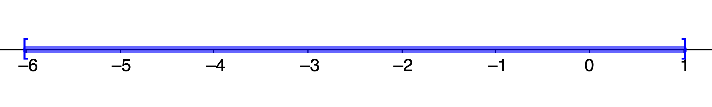
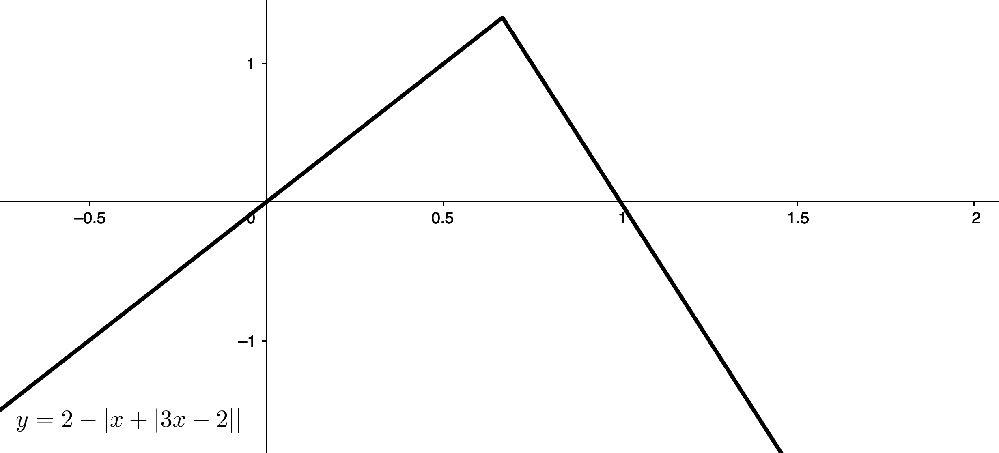

\(\definecolor{red}{RGB}{255,0,0} \definecolor{orange}{RGB}{245, 165, 0} \definecolor{yellow}{RGB}{255,215,0} \definecolor{green}{RGB}{0,255,0} \definecolor{indigo}{RGB}{0,0,255} \definecolor{violet}{RGB}{138,43,226} \definecolor{black}{RGB}{0,0,0}\) \(\require{cancel}\)
Note: These solutions are provided as-is,
for informational purposes only, with no warranty of any kind, expressed or implied, including that of correctness, adequacy, and/or suitability for any purpose, whatsoever. Corrections are welcome and should be emailed to selectedsolutionsdotnet@gmail.com.
A note about the check step
: later in this chapter, and then throughout much of the rest of this text, as well as mathematics in general, we encounter situations in which our perfectly legitimate and correct solution procedures inevitably and unavoidably yield spurious or extraneous solutions, i.e., candidate
solutions which actually don’t satisfy the original equation. In such situations, the check step is an absolutely essential part of the solution procedure (in order to determine which candidate solutions are valid and which are not). Even though linear and quadratic equations are not of this type—our procedures give the solution(s) and only the solution(s)—it is still good mathematical practice
to treat the check step as an essential part of solving a problem. I believe in this principle so strongly that I always include the check step as part of my solutions (except when I leave it to the reader
), even when it may seem trivial.
(At first, when the check step is not required to weed out
extraneous solutions, I will set it apart with its own section within each solution; later, when it does become absolutely essential, it will become an integral part of the solution narrative).
16) Solve \(\displaystyle \frac23 x = \frac92\) in your head.
Sln: The idea here is that you’re supposed to have reached the point in your mathematical development that you understand that to solve this equation, you need to multiply through
by the reciprocal of the thing that’s messing up
the \(x\), in this case \(\displaystyle \frac23\), the reciprocal of which is \(\displaystyle \frac32\); and that the thus required multiplication, \(\displaystyle \left(\frac32\right)\left(\frac92\right) = \boxed{\frac{27}4}\), is simple enough that you should be able to do everything I just described in your head.
(We tend to agree with this expectation of the reader’s preparation level, but refrain from insisting upon it.)
Chk: \(\displaystyle \frac{\cancel2}{\cancel3} \left(\frac{\cancel{27} 9}{\cancel4 2}\right) = \frac92~\checkmark\)
Solve each of the following equations.
32) \(\displaystyle 1 - \frac12 x = 6\)
Sln: I always like to begin by clearing denominators
and giving variables positive coefficients, which we can do here with one multiplication by \(-2: \displaystyle \color{red}{-2}\)\((1 - \frac12 x) = \color{red}-2\)\((6) \implies -2 + x = -12\); now we add \(2\) to both sides: \(-2 \color{red}+2\) \( +~x = -12\color{red}+2\) \(\implies \boxed{x=-10}\)
Chk: \(\displaystyle 1 - \frac12(-10) = 1 + 5 = 6~\checkmark\)
36) \(0.9t = 1 + t\)
Sln: Subtract \(0.9t\) and \(1\) from both sides: \(0.9t - \color{red}0.9t \color{blue}-1\) \(= 1 \color{blue}-1\) \(+~t \color{red}-0.9t\) \(\implies -1 = 0.1t\); now we multiply both sides by 10: \(\color{red}10\)\((-1) = \color{red}10\)\((0.1t) \implies \boxed{t=-10}\)
Chk: \(0.9(-10) = -9 = 1 + (-10)~\checkmark\)
40) \(\displaystyle \frac4y - 5 = \frac5{2y}\)
Sln: (After noting that \(y\) can’t equal 0), as mentioned above, when dealing with rational expressions, i.e., fractions,
I begin by clearing denominators by multiplying through by the least common multiple (LCM) of the denominators, which in this case is \(2y\):
\(\color{red}2y\)\(\displaystyle \left(\frac4y - 5\right) = \color{red}2y\)\(\displaystyle\left(\frac5{2y}\right) \implies 8 - 10y = 5\); I also don’t like
negative numbers (I know how to operate with them, but when I can avoid it, I do, because it’s just one more thing one can mess up), so rather than subtracting 8 from both sides and ending up with \(-10y = -3\), I prefer to add \(10y\) to and subtract 5 from both sides: \(8\color{blue}-5~\)\(- ~10y\color{red}+ 10y\)\(~\)\(= 5\color{blue}-5\color{red}+10y\) \(\implies 3 = 10y\); dividing both sides by 10 yields: \(\boxed{y=0.3}\)
Chk: \(\displaystyle \frac4{0.3} - 5 = \frac{40}3 - \frac{15}3 = \frac{25}3\) and \(\displaystyle \frac5{2(0.3)} = \frac5{0.6} = \frac{50}6 = \frac{25}3~\checkmark\)
44) \((x + 2)(x - 3) = (x + 3)^2\)
Sln: Despite this being the section on linear equations, the reader should: a) recognize this as a quadratic equation (QE), at least as initially posed; and b) know, e.g., from a prior course in algebra, that (with one exception) QE’s generally require us to get the equation into \(ax^2+bx+c = 0\) form in order to solve them. Thus, we must begin by multiplying out both sides: \((x + 2)(x - 3) = (x + 3)^2 \implies x^2 - x - 6 = x^2 + 6x + 9\), followed by getting everything over to one side
and combining like terms: \(\cancel{x^2}\color{red}{-\cancel{x^2}}\)\(- x\color{blue}{-6x}\)\(- 6\color{violet}{-9}\)\( = \cancel{x^2}\color{red}{-\cancel{x^2}}\)\( + \cancel{6x}\color{blue}{-\cancel{6x}}\)\(+ \cancel{9}\color{violet}{-\cancel{9}}\)\(\implies -7x-15=0\): low and behold, it is a linear equation after all, the solution of which is: \[\boxed{x = -\frac{15}7}\]
Chk: \(\displaystyle \left(-\frac{15}7 + 2\right)\left(-\frac{15}7 - 3\right) = \left(-\frac{15}7 + \frac{14}7\right)\left(-\frac{15}7 - \frac{21}7\right) = \left(-\frac17\right)\left(-\frac{36}7\right) = \frac{36}{49}\) while \(\displaystyle \left(-\frac{15}7 + 3\right)^2 = \left(-\frac{15}7 + \frac{21}7\right)^2 = \left(\frac67\right)^2 = \frac{36}{49}~\checkmark\)
48) \(w(4 - w^2) = 8 - w^3\)
Sln: Again, not initially linear, so we have to begin by multiplying everything out, solving for 0,
and hoping for the best
(though by now the reader should have caught on that, because this is the section on linear equations, all these problems have been designed to become linear at some point in the solution procedure). We have: \(w(4 - w^2) = 8 - w^3 \implies\) \(4w-w^3 = 8 - w^3\); adding \(w^3\) to both sides gives: \(4w = 8 \implies \boxed{w=2}\)
Chk: \(2(4 - 2^2) = 2(4-4) = 2(0) = 0 = 8 - 8 = 8 - 2^3~\checkmark\)
52) \(\displaystyle \frac{x}{x^2 - 9} + \frac4{x + 3} = \frac3{x^2 - 9}\)
Sln: Begin by factoring the quadratic denominators: a) so that we know from the start what values \(x\) can’t be; and b) to figure out the LCM of the denominators so that we can multiply through by that to clear
them: \(x^2 - 9 = (x+3)(x-3)\) so \(x\ne \pm3\), and the LCM is simply \((x+3)(x-3)\). Multiplying through
by that yields: \((x-3)(x+3)\left[\displaystyle \frac{x}{x^2 - 9} + \frac4{x + 3} = \frac3{x^2 - 9}\right] \implies x + 4(x-3) = 3 \implies 5x-12=3 \implies 5x = 15 \implies x=3\), but we already know this can’t be a solution (but if you’re not sure, try substituting this in for \(x\) in the original equation and see what happens). Consequently, we conclude that there is no solution, i.e., the solution set is the empty set, \(\boxed{\emptyset}\).
Chk: How do we check
no solution? Well, in general, we can’t (other than, in essence, doing what we just did, i.e., assuming there is a solution, following the consequences of that assumption, and showing that a contradiction ensues, a la that the solution would have to be 3, but it can’t be): no solution means there is no real number (not even a complex number in this instance) which makes this a true statement, so we’d have to be able to verify that the statement is false for all numbers, a physical impossibility. However, we can cheat
(or rather, be clever
) and get a pretty good idea that we’re right by graphing (using technology) the equation solved for zero
: \[\frac{x}{x^2 - 9} + \frac4{x + 3} - \frac3{x^2 - 9} = 0\]and then set equal to
\(y\): \[y = \frac{x}{x^2 - 9} + \frac4{x + 3} - \frac3{x^2 - 9}\]If the graph of this appears to never intersect the \(x\)-axis, i.e., if \(y\) appears to never equal zero, then we can be reasonably confident that we’re right (though we can’t be certain, until we learn some more advanced methods for analyzing this type of graph, later in this text). Here’s a graph of \(y = \displaystyle \frac{x}{x^2 - 9} + \frac4{x + 3} - \frac3{x^2 - 9}\) made with the online, Web-based graphing utility GeoGebra:
(I recognize that at this point in the reader’s mathematical development, this graph may be less than convincing, as it looks like it might eventually equal 0 for adequately large
positive and negative values of \(x\), but in fact, it never does.)
56) \(\displaystyle \frac{-4}{x + 4} = \frac{-3}{x + 6}\)
Sln: Method 1: multiply through by \((x+4)(x+6)\): \(\color{red}\cancel{(x+4)}(x+6)\)\(\displaystyle \frac{-4}{\cancel{x + 4}} = \frac{-3}{\cancel{x + 6}}\color{red}(x+4)\cancel{(x+6)}\)\(\implies\) \(\cancel{-4x} \color{red} + \cancel{4x}\)\(~- 24\color{blue}+12\)\(~= -3x\color{red} + 4x\)\(~-\cancel{12}\color{blue}+\cancel{12}\) \(\implies \boxed{x=-12}\)
Method 2: reciprocate both sides and multiply through by \(-12\): \(\displaystyle \frac{-4}{x + 4} = \frac{-3}{x + 6} \implies \color{red}(-12)\)\(\displaystyle \frac{x+4}{-4} = \frac{x+6}{-3}\color{red}(-12)\) \(\implies 3x+12 = 4x+24 \implies \boxed{x=-12}\)
Chk: \(\displaystyle \frac{-4}{-12 + 4} = \frac{-4}{-8} = \frac12 = \frac{-3}{-6} = \frac{-3}{-12 + 6}~\checkmark\)
60) \(\displaystyle \frac{-4}{2x + 3} + \frac1{x - 1} = \frac1{(2x + 3)(x - 1)}\)
Sln: This we can’t just reciprocate both sides, we have to multiply through by the LCM of the denominators, which in this case is \((2x + 3)(x - 1)\): \(\color{red}(2x + 3)(x - 1)\)\(\displaystyle \left[\frac{-4}{2x + 3} + \frac1{x - 1} = \frac1{(2x + 3)(x - 1)}\right] \implies -4(x-1)+2x+3 = 1 = -2x+7 \implies 2x = 6 \implies\) \(\boxed{x=3}\)
Chk: \(\displaystyle \frac{-4}{2(3) + 3} + \frac1{3 - 1} = -\frac49 + \frac12 = \frac{-8+9}{18} = \frac1{18} = \frac1{9\cdot2} = \frac1{(2(3)+3)(3-1)}~\checkmark\)
64) \(\displaystyle \frac{x + 1}{x^2 + 2x} - \frac{x + 4}{x^2 + x} = \frac{-3}{x^2 + 3x + 2}\)
Sln: We need to multiply through by the LCM of the denominators, so we need to factor them to figure out what that is: \(\displaystyle \frac{x + 1}{x(x + 2)} - \frac{x + 4}{x(x + 1)} = \frac{-3}{(x + 1)(x + 2)} \implies x(x+1)(x+2)\) is the LCM (and we know that \(x\) can’t equal \(0,-1,-2\)). Multiplying through by the LCM we get: \(\color{red}x(x+1)(x+2)\)\(\left[\displaystyle \frac{x + 1}{x^2 + 2x} - \frac{x + 4}{x^2 + x} = \frac{-3}{x^2 + 3x + 2}\right] \implies\)
\((x+1)^2 - (x+2)(x+4) = -3x \implies x^2 + 2x + 1 - (x^2 + 6x + 8) = -3x \implies -4x - 7 = -3x \implies \boxed{x=-7}\)
Chk: \(\displaystyle \frac{-7 + 1}{(-7)^2 + 2(-7)} - \frac{-7 + 4}{(-7)^2 + (-7)} = \frac{-6}{49 + (-14))} - \frac{-3}{49 + (-7)} = -\frac{6}{35}+\frac3{42} = -\frac{36}{210} + \frac{15}{210} = -\frac{21}{210} = -\frac1{10}\)
\(\displaystyle \frac{-3}{(-7)^2 + 3(-7) + 2} = -\frac3{49-21+2} = -\frac3{30} = -\frac1{10}~\checkmark\)
68) \(\displaystyle 18.63x - \frac{21.2}{2.6} = \frac{14}{2.32}x - 20\)
Sln: Method 1: \(\displaystyle \color{red}(2.6)(2.32)\)\(\left[\displaystyle 18.63x - \frac{21.2}{2.6} = \frac{14}{2.32}x - 20\right] \implies 112.37616x-49.184 = 36.4x-120.64 \implies\) \((112.37616-36.4)x=49.184-120.64 \implies \boxed{x = \frac{-71.456}{75.97616} \doteq -0.941}\)
Method 2: \(\displaystyle 18.63x - \frac{21.2}{2.6} = \frac{14}{2.32}x - 20 \implies (18.63-\frac{14}{2.32})x = \frac{21.2}{2.6}-20 \implies x=\left(\frac{21.2-52}{2.6}\right)\left(\frac{2.32}{2.32(18.63)-14}\right) =\) \[\boxed{\frac{-71.456}{75.97616} \doteq -0.941}\]
Chk: \(\displaystyle 18.63(-0.941) - \frac{21.2}{2.6} \doteq -25.68\), \(\displaystyle \frac{14}{2.32}(-0.941) - 20 \doteq -25.68~\checkmark\)
74) Solve for \(x\): \(\displaystyle \frac{b + c}{x + a} = \frac{b - c}{x - a}, c \ne 0, a\)
Sln: Multiply through by both denominators (or, equivalently, cross-multiply
), yielding: \(\displaystyle \frac{b + c}{x + a} = \frac{b - c}{x - a} \implies (b+c)(x-a) = (b-c)(x+a) \implies (b+c)x-a(b+c) = (b-c)x+a(b-c) \implies\) \([b+c-(b-c)]x=a[b-c+(b+c)] \implies 2cx = 2ab \implies \boxed{x=\frac{ab}c}\)
Chk: \(\displaystyle \frac{b + c}{ab/c + a} = \frac{b+c}{\frac{ab+ac}{c}} = \frac{c(b+c)}{a(b+c)} = \frac ca\)
\(\displaystyle \frac{b - c}{ab/c - a} = \frac{c(b-c)}{a(b-c)} = \frac ca~\checkmark\)
76) Find the number \(b\) for which \(x=2\) is a solution of: \[x + 2b = x - 4 + 2bx\]
Sln: Substituting 2 in for \(x\) gives: \(2 + 2b = 2 - 4 + 2b(2) \implies 2+2b = 4b-2 \implies 2b = 4 \implies\) \[\boxed{b = 2}\]
Chk: Substituting 2 in for \(b\) and \(x\) in the original equation yields: \(2+2(2) = 2+4 = 6\), \(2-4+2(2)(2) = 8+2-4 = 6~\checkmark\)
78) Solve \(A = P(1 + rt)\) for \(r\)
Sln: \(A = P(1 + rt) \implies \displaystyle \frac AP = 1+rt \implies \frac AP - 1 = rt \implies\) \[\boxed{r = \frac1t\left(\frac AP - 1\right)}\]
Chk: \(\displaystyle P(1 + \frac1{\cancel t}\left(\frac AP - 1\right)\cancel t) = P(\cancel 1+\frac AP - \cancel 1) = \cancel{P}\left(\frac A{\cancel P}\right) = A~\checkmark\)
88) Going into the final exam, which will count as two-thirds of the final grade, Mike has test scores of 86, 80, 84, and 90; what score does Mike need on the final in order to earn a B, which requires an average score of 80? What does he need to earn an A, which requires an average of 90?
Sln: (I chose this one because it is an extremely common question students have; henceforth, the reader should never have to ask.) Let \(x = \) the score needed; since it will count as two-thirds of the final score, the other four scores together count as one-third of the final score (assuming there are no other grades we haven’t been told about). Assuming none of these count any more than the others, since there are four of them, each counts as one-fourth of one-third, i.e., \(\displaystyle \left(\frac14\right)\left(\frac13\right) = \frac1{12}\) of the final score. Thus to figure out the \(x\) which gives a final score of 80, we need to solve: \(\displaystyle \frac23x+\frac1{12}(86 + 80 + 84 + 90) = 80 \implies \frac23 x = 80 - \frac{340}{12} \implies x = \frac32\left(80-\frac{85}3\right) = 120-\frac{85}2 = \boxed{77.5}\)
Chk: \(\displaystyle \frac23(77.5) + \frac1{12}(86 + 80 + 84 + 90) = \frac{155}3 + \frac{85}3 = \frac{155+85}3 = \frac{240}3 = 80~\checkmark\)
Figuring out \(x\) to attain a score of 90 is left to the reader.
90) A car dealer, at a year-end clearance, reduces the list price of last year’s models by 15%. If a certain four-door model has a discounted price of $8000, what was its list price? How much can be saved by purchasing last year’s model?
Sln: Let \(x\) equal last year’s list price; then the discounted price is \(x-0.15x = (1-0.15)x = 0.85x = \$8000 \implies\) \(x = \$8000/0.85 = \boxed{\$9411.76}\) and thus the savings from purchasing last year’s model is \(\$9411.76-\$8000 = \boxed{\$1411.76}\).
Chk: \(\$9411.76-0.15(\$9411.76) = \$9411.76-\$1411.76 = \$8000~\checkmark\)
94) A wool suit, discounted by 30% for a clearance sale, has a price tag of $399. What was the suit’s original price?
Sln: Let \(x\) equal the original price; then \(\$399 = x - 0.3x = (1-0.3)x = 0.7x \implies x = \$399/0.7 = \boxed{\$570}\).
Chk: \(\$570-0.3(\$570) = \$570-\$171 = \$399~\checkmark\)
In Problems 20, 24, & 28, solve each equation by factoring.
Factoring is an important skill; however, factoring by trial-and-error
is not: what’s important is being able to factor by identifying the solutions (a.k.a. the roots,
a.k.a. the zeros
) of the quadratic set equal to zero,
using the fact that if \(r,s\) are the zeros of \(ax^2+bx+c=0\) then \(ax^2+bx+c=a(x-r)(x-s)\) and vice-versa. (Proof: suppose \(ax^2+bx+c=a(x-r)(x-s)\); then if \(x=r, ar^2+br+c=a(r-r)(r-s) = a(0)(r-s) = 0\), i.e., \(r\) is a solution of \(ax^2+bx+c=0\), and similarly for \(s\). Conversely, suppose \(r,s\) are solutions of \(ax^2+bx+c=0\); we know from the quadratic formula that \(r,s = \displaystyle \frac{-b\pm\sqrt{b^2-4ac}}{2a}\); without loss of generality, let \(r=\displaystyle \frac{-b+\sqrt{b^2-4ac}}{2a}\), \(s=\displaystyle \frac{-b-\sqrt{b^2-4ac}}{2a}\) and consider the product \(a(x-r)(x-s) = \displaystyle a\left(x-\frac{-b+\sqrt{b^2-4ac}}{2a}\right)\left(x-\frac{-b-\sqrt{b^2-4ac}}{2a}\right) =\) \(\displaystyle a\left[x^2 - \left(\frac{-b+\cancel{\sqrt{b^2-4ac}}}{2a} + \frac{-b-\cancel{\sqrt{b^2-4ac}}}{2a}\right)x + \left(\frac{-b+\sqrt{b^2-4ac}}{2a}\right)\left(\frac{-b-\sqrt{b^2-4ac}}{2a}\right)\right] =\) \(\displaystyle a\left[x^2+\left(\frac{\cancel2b}{\cancel2a}\right)x + \frac{(-b)^2-\left(\sqrt{b^2-4ac}\right)^2}{4a^2}\right] = a\left(x^2 + \frac ba x + \frac{b^2-b^2+4ac}{4a^2}\right) = a\left(x^2 + \frac ba x + \frac{c}{a}\right) = \)
\(ax^2+bx+c.~~\blacksquare\)) Consequently, we will not solve these by factoring; rather, we will factor by solving,
using the quadratic formula to solve, and then writing down the factorization based on that result.
20) \(x(x + 4) = 12\)
Sln: In order to use the quadratic formula, the quadratic needs to be in \(ax^2+bx+c=0\) form, so we need to expand the product and bring the constant term over to the other side:
\(x(x + 4) = 12 \implies x^2+4x-12=0 \implies x = \displaystyle \frac{-4\pm\sqrt{4^2-4(1)(-12)}}{2(1)} = \frac{-4\pm\sqrt{16+48}}2 = \frac{-4\pm\sqrt{64}}2 = \frac{-4\pm8}{2}= \frac42=\boxed2\) or \(x=\displaystyle \frac{-12}2 = \boxed{-6}\) (which implies that \(x^2+4x-12 = (x-2)(x+6)\), the check of which is left to the reader).
Chk: \(2(2+4) = 2(6) = 12~\checkmark, (-6)(-6+4) = (-6)(-2) = 12~\checkmark\)
24) \(2(2u^2 - 4u) + 3 = 0\)
Sln: Even though this is solved for zero,
it is not yet in \(ax^2+bx+c=0\) form, so we need to start by expanding the product:
\(2(2u^2 - 4u) + 3 = 4u^2 - 8u + 3 = 0 \implies u = \displaystyle \frac{-(-8)\pm\sqrt{(-8)^2-4(4)(3)}}{2(4)} = \frac{8\pm\sqrt{64-48}}8 = \frac{8\pm\sqrt{16}}8 = \frac{8\pm4}8 = \frac{12}8 = \boxed{\frac32}\) or \(u=\displaystyle \frac48=\boxed{\frac12}\) (which implies that \(4u^2 - 8u + 3 = \displaystyle 4\left(u-\frac32\right)\left(u-\frac12\right) = (2u-3)(2u-1)\); again we leave the check to the reader).
Chk: \(\displaystyle 2\left(2\left(\frac12\right)^2 - 4\left(\frac12\right)\right) + 3 = 2\left(\frac12 - 2\right) + 3 = 1-4+3 = 0~\checkmark\) \(2\left(2\left(\frac32\right)^2 - 4\left(\frac32\right)\right) + 3 = 2\left(\frac92 - 6\right) + 3 = 9-12+3 = 0~\checkmark\)
28) \(\displaystyle \frac5{x + 4} = 4 + \frac3{x - 2}\)
Sln: Begin by clearing denominators
by multiplying through by \((x+4)(x-2)\):
\(\color{red}(x+4)(x-2)\)\(\displaystyle \left[\frac5{x + 4} = 4 + \frac3{x - 2}\right] = 5(x-2) = 4(x+4)(x-2) + 3(x+4) \implies 5x-10 = 4x^2+8x-32+3x+12 \implies\) \(4x^2 + 6x - 10 = 0 \implies x = \displaystyle \frac{-6\pm\sqrt{6^2-4(4)(-10)}}{2(4)} = \frac{-6\pm\sqrt{36+160}}8 = \frac{-6\pm\sqrt{196}}8 = \frac{-6\pm14}8 = \frac88 = \boxed1\) or \(x=\displaystyle \frac{-20}8 = \boxed{-\frac52}\) (factorization from solutions left to the reader).
Chk: \(\displaystyle \frac5{1 + 4} - 4 - \frac3{1 - 2} = \frac55 - 4 - \frac3{-1} = 1-4+3 = 0~\checkmark\)
\(\displaystyle \frac5{-5/2 + 4} - 4 - \frac3{-5/2 - 2} = \frac5{3/2} - 4 - \frac3{-9/2} = \frac{10}3 - \frac{12}3 + \frac23 = 0~\checkmark\)
34) Solve \((3z - 2)^2 = 4\) using the square-root method.
Sln: This is the one kind of quadratic I believe in solving not using the quadratic formula. The method is that we take the square-root of the side containing the variable, and the positive/negative square-root
of the side containing only a number: \(\sqrt{(3z - 2)^2} = 3z-2 = \pm\sqrt4 = \pm2 \implies 3z-2 = 2\) or \(3z-2=-2\); adding 2 to both sides in both equations yields: \(3z=4\) or \(3z=0 \implies z = \displaystyle \boxed{\frac43}\) or \(z=\boxed{0}\).
Chk: \((3(4/3) - 2)^2 = (4-2)^2 = 2^2 = 4~\checkmark, (3(0) - 2)^2 = (-2)^2 = 4~\checkmark\)
40) Solve \(2x^2 - 3x - 1 = 0\) by completing the square.
Sln: Completing the square is not an efficient way to solve a quadratic, but it is an important skill in advanced math, so I will go ahead and do this one as instructed to provide an additional illustration. Begin by dividing through by 2 to make the leading coefficient 1: \(2x^2 - 3x - 1 = 0 \implies \displaystyle x^2-\frac32 x - \frac12 = 0\); now, in order for \(\displaystyle x^2-\frac32 x\) to be the first two terms of a perfect square trinomial, the constant term has to be \(\displaystyle\left[\frac12\left(-\frac32\right)\right]^2 = \frac9{16}\), so we have to add \(\displaystyle \frac9{16}+\frac12 = \frac{9+8}{16} = \frac{17}{16}\) to both sides yielding: \(\displaystyle x^2-\frac32x+\frac9{16} = \left(x-\frac34\right)^2 = \frac{17}{16}\); now we can solve using the square-root method: \(\displaystyle \sqrt{\left(x-\frac34\right)^2} = x-\frac34 = \pm\sqrt{\frac{17}{16}} = \pm\frac{\sqrt{17}}4 \implies x-\frac34 = \frac{\sqrt{17}}4 \implies x = \boxed{\frac{3+\sqrt{17}}4}\) or \(\displaystyle x-\frac34 = -\frac{\sqrt{17}}4 \implies x = \boxed{\frac{3-\sqrt{17}}4}\)
Chk: \(\displaystyle 2\left(\frac{3+\sqrt{17}}4\right)^2 - 3\left(\frac{3+\sqrt{17}}4\right) - 1 = \frac{9+6\sqrt{17}+17}8 - \frac{9+3\sqrt17}4 - 1 = \frac{26 + 6\sqrt{17} - 18 - 6\sqrt{17} - 8}8 = 0~\checkmark\) \(\displaystyle 2\left(\frac{3-\sqrt{17}}4\right)^2 - 3\left(\frac{3-\sqrt{17}}4\right) - 1 = \frac{9-6\sqrt{17}+17}8 - \frac{9-3\sqrt{17}}4 - 1 = \frac{26-6\sqrt{17}-18+6\sqrt{17}-8}8 = 0~\checkmark\)
In Problems 44, 54, & 64, find the real solutions, if any, of each equation using the quadratic formula: \[ax^2+bx+c=0 \iff x = \frac{-b\pm\sqrt{b^2-4ac}}{2a}\].
44) \(x^2 + 6x + 1 = 0\)
Sln: \(x^2 + 6x + 1 = ax^2+bx+c=0\) with the identifications \(a=1, b=6, c=1\), so \(\displaystyle x=\frac{-6\pm\sqrt{6^2-4(1)(1)}}{2(1)} = \) \(\displaystyle \frac{-6\pm\sqrt{36-4}}2 = \frac{-6\pm\sqrt{32}}2 = \frac{-6\pm4\sqrt2}2 = \boxed{-3\pm2\sqrt2}\)
Chk: \((-3+2\sqrt2)^2 + 6(-3+2\sqrt2) + 1 = 9 -12\sqrt2+8-18+12\sqrt2+1 = 0~\checkmark\); the check for \(x=-3-2\sqrt2\) is left for the reader.
54) \(4u^2 - 6u + 9 = 0\)
Sln: \(a=4, b=-6, c=9\), so \(\displaystyle u = \frac{-(-6)\pm\sqrt{(-6)^2-4(4)(9)}}{2(4)} = \frac{6\pm\sqrt{36-144}}8 = \frac{6\pm\sqrt{-108}}8\); since the discriminant is less than zero, this equation has \(\boxed{\text{no real solutions}}\).
Chk: One can’t check
a non-answer,
but one can graph the polynomial set equal to \(y\), and if it is clear from the graph that \(y\) never equals zero, i.e., the graph never intersects the \(x\) (or in this case, \(u\)) axis, then that serves as a check
:
You should remember enough from Algebra II
(or equivalent) to recognize that this graph will never go lower than its exhibited minimum, and therefore we can be certain that \(y\ne0\) for all real \(u\), as determined above algebraically.
64) \(\displaystyle \frac{2x}{x - 3} + \frac1x = 4\)
Sln: Begin by multiplying through
by \(x(x-3)\) yielding:
\(\color{red}x(x-3)\)\(\left[\displaystyle \frac{2x}{x - 3} + \frac1x = 4\right] \implies 2x^2 + x-3 = 4(x^2-3x) = 4x^2-12x \implies 2x^2 - 13x + 3 = 0 \implies \) \(\displaystyle x = \frac{-(-13)\pm\sqrt{(-13)^2-4(2)(3)}}{2(2)} = \frac{13\pm\sqrt{169-24}}4 = \boxed{\frac{13\pm\sqrt{145}}4}\) (since \(145 = 5\cdot29, \sqrt{145}\) does not simplify).
Chk: \(\displaystyle \frac{2\left(\frac{13+\sqrt{145}}4\right)}{\left(\frac{13+\sqrt{145}}4\right) - 3} + \frac1{\left(\frac{13+\sqrt{145}}4\right)} = \left(\frac{13+\sqrt{145}}2\right)\left(\frac4{13+\sqrt{145}-12}\right) + \frac4{13+\sqrt{145}} = \frac{2(13+\sqrt{145})}{1+\sqrt{145}} + \frac4{13+\sqrt{145}} = \) \(\displaystyle \frac{26+2\sqrt{145})}{1+\sqrt{145}}\frac{\sqrt{145}-1}{\sqrt{145}-1} + \frac4{13+\sqrt{145}}\frac{13-\sqrt{145}}{13-\sqrt{145}} = \frac{26\sqrt{145} - 26 + 2(145) - 2\sqrt{145}}{145-1} + \frac{52-4\sqrt{145}}{169-145} = \) \(\displaystyle \frac{264+24\sqrt{145}}{144} + \left(\frac{52-4\sqrt{145}}{24}\right)\left(\frac66\right) = \frac{264+\cancel{24\sqrt{145}} + 312 - \cancel{24\sqrt{145}}}{144} = \frac{576}{144} = 4~\checkmark\); the check for the minus
solution is left to the reader (it’s good arithmetic exercise: do it!)
70) Use the quadratic formula and a calculator to solve \(\pi x^2 + \pi x - 2 = 0\); express any solutions rounded to two decimal places.
Sln: \(\pi x^2 + \pi x - 2 = 0 \implies x=\displaystyle \frac{-\pi \pm \sqrt{\pi^2-4(\pi)(-2)}}{2\pi} = \boxed{\frac{-\pi + \sqrt{\pi^2+8\pi}}{2\pi} \doteq 0.44}\) or \(\displaystyle \boxed{\frac{-\pi - \sqrt{\pi^2+8\pi}}{2\pi} \doteq -1.44}\)
Chk: Here’s how you check both solutions simultaneously: \(\displaystyle \pi\left(\frac{-\pi \pm \sqrt{\pi^2+8\pi}}{2\pi}\right)^2 + \pi\left(\frac{-\pi \pm \sqrt{\pi^2+8\pi}}{2\pi}\right) - 2 = \) \(\displaystyle \frac{(-\pi)^2 \pm 2(-\pi)\sqrt{\pi^2+8\pi} + \pi^2+8\pi}{4\pi} + \frac{-\pi \pm \sqrt{\pi^2+8\pi}}2 - 2 = \frac{\cancel{2\pi^2} \mp \cancel{2\pi\sqrt{\pi^2+8\pi}} + \cancel{8\pi} - \cancel{2\pi^2} \pm \cancel{2\pi\sqrt{\pi^2+8\pi}} - \cancel{8\pi}}{4\pi}\) \(=0~\checkmark\)
In Problems 72 & 76, use the discriminant to determine whether each quadratic equation has two unequal real solutions, a repeated real solution, or no real solution, without solving the equation.
72) \(x^2 + 4x + 7 = 0\)
Sln: \(\Delta\) (the capital Greek letter delta,
a commonly used symbol for the discriminant) \(= b^2-4ac = 4^2-4(1)(7) = 16-28 = -12 \lt 0\) \(\implies \boxed{\text{no real solutions}}\)
Chk: No formal check (yet), but here’s a graph that should convince you:
76) \(2x^2 - 3x - 7 = 0\)
Sln: \(\Delta = (-3)^2-4(2)(-7) = 9+56 = 65 \gt 0 \implies \boxed{\text{two distinct real solutions}}\)
Chk: Just as a graph that never intersects the \(x\)-axis shows that the equation has no real solutions, a graph which intersects it twice indicates that the equation has two distinct real solutions:
In Problems 82, 86, & 90, find the real solutions, if any, of each equation; use any method.
82) \(6x^2 + 7x - 20 = 0\)
Sln: \(\displaystyle x=\frac{-7\pm\sqrt{7^2-4(6)(-20)}}{2(6)} = \frac{-7\pm\sqrt{49+480}}{12} = \frac{-7\pm\sqrt{529}}{12} = \frac{-7\pm23}{12} = \frac{16}{12} = \boxed{\frac43}\) or \(\displaystyle x = \frac{-30}{12} = \boxed{-\frac52}\)
Chk: \(\displaystyle 6\left(\frac43\right)^2 + 7\left(\frac43\right) - 20 = \frac{32}3 + \frac{28}3 - 20 = \frac{60}3-20 = 0~\checkmark\)
\(\displaystyle 6\left(-\frac52\right)^2 + 7\left(-\frac52\right) - 20 = \frac{75}2 - \frac{35}2 - \frac{40}2 = 0~\checkmark\).
86) \(\displaystyle \frac12 x^2 = \sqrt2 x + 1\)
Sln: \(\displaystyle \frac12 x^2 = \sqrt2 x + 1 \implies x^2 - 2\sqrt2 x - 2 = 0 \implies x = \frac{2\sqrt2 \pm \sqrt{8-4(1)(-2)}}2 = \frac{2\sqrt2 \pm \sqrt{16}}2 = \boxed{\sqrt2\pm2}\)
Chk: \(\displaystyle \frac12 (\sqrt2\pm2)^2 = \frac{2 \pm 4\sqrt2 + 4}2 = 3\pm2\sqrt2 = 2 \pm 2\sqrt2 + 1 = \sqrt2(\sqrt2\pm2) + 1~\checkmark\)
90) \(\displaystyle \frac{3x}{x + 2} + \frac1{x - 1} = \frac{4 - 7x}{x^2 + x - 2}\)
Sln: We note at the outset that \(x\ne-2, 1\). Now, \(x^2 + x - 2 = (x+2)(x-1)\) so, multiplying through by that, we get:
\(\color{red}(x+2)(x-1)\)\(\displaystyle \left[\frac{3x}{x + 2} + \frac1{x - 1} = \frac{4 - 7x}{x^2 + x - 2}\right] \implies (3x)(x-1) + 1(x+2) = 4-7x \implies 3x^2 + 5x - 2 = 0 \implies \) \(\displaystyle x=\frac{-5\pm\sqrt{25-4(3)(-2)}}{2(3)} = \frac{-5\pm\sqrt{25+24}}6 = \frac{-5\pm7}6 \implies x = \frac13\) or \(x = -2,\) except that we know that \(x\ne -2\), so the only solution is \(\boxed{\frac13}\).
Chk: \(\displaystyle \frac{3(1/3)}{(1/3) + 2} + \frac1{(1/3) - 1} = \frac1{7/3} - \frac1{2/3} = \frac37 - \frac32 = \frac{6-21}{14} = -\frac{15}{14}\) while \(\displaystyle \frac{4 - 7(1/3)}{(1/3)^2 + 1/3 - 2} = \frac{(12-7)/3}{(1+3-18)/9} = \) \(\displaystyle \left(\frac53\right)\left(\frac9{-14}\right) = -\frac{15}{14}~\checkmark\)
As for confirming that the equation has only one solution, here’s a graph of \(\displaystyle y = \frac{4 - 7x}{x^2 + x - 2} - \frac{3x}{x + 2} - \frac1{x - 1}\)
We will learn in Chapter 5, Section 3 that this shows us enough of the graph to know that the one \(x\)-intercept we see is the only \(x\)-intercept this function has. \(\blacksquare\)
92) How many right triangles have a hypotenuse that measures \(4x + 5\) inches and legs that measure \(3x + 13\) inches and \(x\) inches? What are the dimensions of the triangle(s)?
Sln: In other words, from the Pythagorean Theorem, how many positive, real solutions are there to the equation \(x^2 + (3x+13)^2 = (4x+5)^2 \implies (16-9-1)x^2 + (40 - 78)x + (25-169) = 6x^2 - 38x - 144 = 0 \implies 3x^2 - 19x - 72 = 0\) \(\implies \displaystyle x = \frac{-(-19) \pm \sqrt{(-19)^2 - 4(3)(-72)}}{2(3)} = \frac{19 \pm \sqrt{361+ 864}}6 = \frac{19 \pm \sqrt{1225}}6 = \frac{19\pm 35}6 = 9\) or \(\displaystyle -\frac83\), but the second solution of the algebraic equation can’t be the length of the side of a triangle (lengths are strictly positive), so there is only \(\boxed{\text{one}}\) right triangle satisfying the given criteria, and the lengths of its sides are \(\boxed{9}\), \(3(9)+ 13 = \boxed{40}\), and \(4(9)+5 = \boxed{41}\) inches.
Chk: We confirm that \(9^2+40^2 = 41^2\): the left-hand-side \(= 81 + 1600 = 1681 = 41^2.~\checkmark~\) (Confirming that this is indeed the only right triangle satisfying the requirements can be done by graphing \(y=3x^2-19x-72\) to see that the other \(x\)-intercept is negative, which is left to the reader.)
96) An adjustable water sprinkler that sprays water in a circular pattern is placed at the center of a square field whose area is 1250 square feet (see the figure in the text). What is the shortest radius setting that can be used if the field is to be completely enclosed within the circle?
Sln: Let \(r\) be the required shortest radius setting; from the figure, it should be clear that \(2r\) is the length of the square’s diagonal. Now, because the field is a square, each corner is a right angle, so the diagonal is the hypotenuse of a right triangle; furthermore, also because the field is a square, the legs of said right triangle are equal, say \(s\). From the Pythagorean Theorem we know that \(s^2 + s^2 = 2s^2 = (2r)^2 = 4r^2 \implies r^2 = s^2/2\); but, once more using the fact that the field is a square, we know that \(s^2 = \) the area of the field, which is given to be 1250 ft\(^2\). Thus \(r^2 = 1250/2 \implies\) \(r = \sqrt{625} = \boxed{25\text{ ft}}.\)
Chk: \(r=25\) ft implies that the diagonal of the enclosed square is 50 ft, and we know that \(50^2 = 2s^2 \implies\) \(s^2 = 2500/2 = 1250\) ft\(^2~\checkmark\)
100) (Physics) An object is propelled vertically upward with an initial velocity of 20 meters per second. The distance \(s\) (in meters) of the object from the ground after \(t\) seconds is \(s = -4.9t^2 + 20t\). a) When will the object be 15 meters above the ground? b) When will it strike the ground? c) Will the object reach a height of 100 meters?
Sln: I chose this one because many students of Precalculus
are taking it as a pre- or co-requisite for Physics.
a) The point of the equation is that it relates a time \(t\) in seconds to an altitude
(height above the ground) \(s\) in meters: if we’re given a value of \(t\), the equation enables us to calculate the corresponding \(s\), and vice-versa, i.e., given a value of \(s\), we can solve for the corresponding value(s) of \(t\), i.e., the time(s) at which the object will have the altitude \(s\); this latter case is the problem we’re given in part a, i.e., we simply need to solve the equation \(15 = -4.9t^2+20t\) for \(t\) (it is no more complicated than that). We have: \(-4.9t^2 + 20t = 15 \implies 4.9t^2-20t+15=0 \implies\) \(t = \displaystyle \frac{20 \pm \sqrt{400-4(4.9)(15)}}{2(4.9)} = \frac{20 \pm \sqrt{400-294}}{9.8} = \frac{20 \pm \sqrt{106}}{9.8} \implies\) \(t = \boxed{\frac{20 + \sqrt{106}}{9.8} \doteq 3.09\text{ sec}}\) and \(t = \boxed{\frac{20 - \sqrt{106}}{9.8} \doteq 0.99\text{ sec}},\) i.e., there are two times at which the object will have an altitude of 15 meters.
Chk: I will give the check for the approximate answers (the reader should do the checks for the exact answers, i.e., \(\displaystyle \frac{20\pm\sqrt{106}}{9.8}\))
\(-4.9(3.09)^2+20(3.09) = -4.9(9.5481) + 61.8 = 15.01~\checkmark\)
\(-4.9(0.99)^2+20(0.99) = -4.9(0.9801) + 19.8 = 15.00~\checkmark\)
b) When will it strike the ground,
i.e., when will its altitude, \(s\), be zero? We need to solve: \(0 = -4.9t^2+20t \implies t(4.9t-20) = 0 \implies t=0\) (i.e., the instant it is projected upward: not the solution we’re looking for) or \(4.9t-20 = 0 \implies t = \boxed{\frac{20}{4.9} \doteq 4.08\text{ sec.}}\)
Chk: \(-4.9(4.08)^2+20(4.08) = 0.03~\checkmark\) (again, check of the exact answer, 20/4.9, is left to the reader).
c) Will the object reach a height of 100 m,
i.e., does the equation \(100=-4.9t^2+20t\) have any real solutions? This equation is equivalent to \(4.9t^2-20t+100=0\); checking its discriminant: \(\Delta = (-20)^2-4(4.9)(100) = 400-4.9(400) =\) \(400(1-4.9) = -3.9(400) \lt 0 \implies \boxed{\text{no}}\), the equation \(100=-4.9t^2+20t\) has no real solutions, so there is no time at which the object will reach an altitude of 100 m.
Chk: one check is, as before, to graph \(s=-4.9t^2+20t\) to see that it never reaches \(s=100\); but soon enough we’ll be learning another way: we’ll learn (or perhaps you already did in Algebra II
?) how to find the maximum value \(s\) does attain (hint: it attains that value half-way between \(t=0\) and \(t=20/4.9\)), so calculating that and seeing that it is less than 100 becomes another way for us to check this result (or indeed, answer the question!)
104) A circular pool measures 10 feet across; one cubic yard of concrete is to be used to create a circular border of uniform width around the pool. If the border is to have a depth of 4 inches, how wide will the border be? (1 cubic yard 27 cubic feet) See illustration (Note: not to scale).
Sln: Let \(x =\) width of the border; it is related to the given volume of concrete—1 yd\(^3 = 27\) ft\(^3\)—via the volume of the moat
it is to fill, which is the difference in volume between two (right-circular) cylinders: an inner
one of radius \(r_i = 5\) ft, and an outer
one of radius \(r_o = 5+x\) ft, both with a height, \(h\), of 4 in \(= \frac13\) ft. The volume of such cylinders is given by \(V = \pi r^2 h\), so we must have:
27 ft\(^3 = \displaystyle \frac13 \pi(x+5)^2 - \frac13 \pi(5^2) \implies \frac{81}{\pi} = x^2+10x+25-25 \implies x^2+10x-\frac{81}{\pi} = 0 \implies \) \(\displaystyle x = \frac{-10\pm\sqrt{100-4(1)(-81/\pi)}}{2(1)} = \frac{-10\pm\sqrt{100+324/\pi}}{2}\); now, \(\displaystyle \frac{-10-\sqrt{100+324/\pi}}2 \lt 0\) (why?) and lengths can’t be negative, so we have: \[\boxed{x=\frac{-10 + \sqrt{100+324/\pi}}2 \doteq 2.126\text{ ft}}\]
Chk: \(\frac13\pi(5+2.126)^2-\frac13\pi(5^2) = \frac{\pi}3((7.126)^2-25) \doteq \frac{\pi}3(25.780) \doteq 26.997\) ft\(^3~\checkmark\)
108) The screen size of a television is determined by the length of the diagonal of the rectangular screen; traditional TVs come in a 4 : 3 format (a.k.a. aspect ratio
), meaning the ratio of the length to the width of the rectangular screen is 4 to 3; find the screen area of a traditional 50-inch TV and compare it with a 50-inch Plasma TV whose screen is in a 16 : 9 format; which screen is larger?
Sln: Let \(\ell = \) the length of the TV, and \(w = \) its width; then what the ratio of the length to the width of the rectangular screen is 4 to 3
means is that \(\displaystyle \frac{\ell}w = \frac43 \implies \ell = \frac43w\). Since the screen is rectangular, the 50 inch diagonal is the hypotenuse of a right triangle whose legs are \(\ell\) and \(w\), so we additionally know that \(50^2 = \ell^2 + w^2 = \left(\frac43w\right)^2 + w^2 = \left(\frac{16}9+1\right)w^2 = \frac{25}9w^2\) \(\implies w^2=(\cancel5\cdot 10)^2\frac9{\cancel5^2} = 900 \implies \boxed{w = 30\text{ in.}} \implies \boxed{\ell = \frac43(30) = 40\text{ in.}}\)
Chk: \(\ell/w = 40/30 = 4/3~\checkmark\), \(40^2+30^2 = 1600 + 900 = 2500 = 50^2~\checkmark\).
For the 16:9 aspect ratio TV (with the same 50 in. diagonal), we have: \(\ell = \frac{16}9 w, 50^2 = \left(\frac{16}9 w\right)^2 + w^2 = \left(\frac{256}{81}+1\right)w^2 = \frac{337}{81}w^2 \implies w^2 = \frac{(9\cdot 50)^2}{337} \implies\) \[\boxed{w=\frac{450}{\sqrt{337}} \doteq 24.5\text{ in}} \implies \boxed{\ell = \frac{16}9\frac{450}{\sqrt{337}} = \frac{800}{\sqrt{337}} \doteq 43.6\text{ in.}}\]
Chk: \(9(43.6/24.5) \doteq 16.02~\checkmark\), \(43.6^2+24.5^2 \doteq 2501 \doteq (50.01)^2~\checkmark\).
112) Show that the product of the roots of a quadratic equation is \(\displaystyle \frac ca\).
Pf: This statement is only true if \(a,c\) have their usual meanings when the equation is in the form \(ax^2+bx+c=0\), so we assume that is the case; additionally, we assume \(a\ne 0\) (for otherwise, the ratio \(c/a\) is undefined, and the equation is not quadratic, and thus does not have two solutions, and thus it doesn’t even make sense to speak of the product of the roots
). With these assumptions, the product of the two roots is:
\(\displaystyle \left(\frac{-b+\sqrt{b^2-4ac}}{2a}\right)\left(\frac{-b-\sqrt{b^2-4ac}}{2a}\right) = \frac{(-b)^2-\left(\sqrt{b^2-4ac}\right)^2}{4a^2} = \frac{b^2-(b^2-4ac)}{4a^2} = \frac{\cancel{4}\cancel{a}c}{\cancel{4}a^{\cancel{2} 1}} = \frac ca.~~~\blacksquare\)
114) Find \(k\) such that the equation \(x^2 - kx + 4 = 0\) has a repeated real solution.
Sln: (I chose this one because this type of question—find values of such-and-such so that some expression or equation, which depends on such-and-such, has a specified property—is a common question on mathematics exams, and, in my experience, it trips students up
simply because it is new to them.)
A quadratic equation in the form \(ax^2+bx+c=0\), which this is, has a repeated real solution when \(a,b,c\) are all real, and \(b^2-4ac=0\). Therefore, we simply need to find \(k\) such that \((-k)^2-4(1)(4)=0\), which implies \(k^2 = 16 \implies k = \boxed{\pm4}.\)
Chk: \(x^2-4x+4 = (x-2)^2 = 0 \implies 2\) is a repeated solution, and similarly \(x^2+4x+4 = (x+2)^2 = 0 \implies -2\) is a repeated solution. \(\checkmark\) (Note that the solution to the Problem—\(\pm4\)—is not the same as the repeated solutions of the equations resulting from the solution to the problem.)
116) Show that the real solutions of the equation \[ax^2+bx+c=0~~~(\text{Eq. "}ac\text{"})\] are the reciprocals of the real solutions of the equation \[cx^2 + bx + a = 0~~~(\text{Eq. "}ca\text{"}).\]Assume that \(b^2 - 4ac \ge 0\).
Pf: As stated, this claim isn’t precisely true: we must further stipulate that at least one of \(a,c \ne 0\), (because if they are both zero, then we really have only one equation, \(bx=0 \implies b = 0 \implies x = \) any real number, or \(x=0\), which has no reciprocal, i.e., if \(a=c=0\), the claim isn’t true); and that if one of them is zero—we may assume without loss of generality that it is \(a\), (for if not, simply re-label
the coefficients)—then the claim is only true for the non-zero solution of \(cx^2+bx=0\), namely, \(\displaystyle x=-\frac bc\) (because it can’t be true for the zero solution of this equation, because zero has no reciprocal), which further implies that \(b\ne 0\) (for otherwise \(x=0\) is the only solution of \(cx^2=0\), and not only does this not have a reciprocal, but the other equation, \(c=0\) has no solution, since we’ve assumed that \(c\ne 0\) in this instance).
So we must consider two distinct cases:
Case 1: \(a=0, c, b \ne 0\): in this case, as already noted, the non-zero solution of \(cx^2+bx = 0\) is \(\displaystyle x=-\frac bc\), while the other equation, \(bx+c=0\), has solution \(\displaystyle x=-\frac cb\) and \(\displaystyle \left(-\frac bc\right)\left(-\frac cb\right) = 1\), so the claim is true in this case.
Case 2: \(a,c \ne 0\) (\(b\) may or may not equal zero): in this case, the solutions of Eq. \(ac\)
are \(\displaystyle \frac{-b\pm\sqrt{b^2-4ac}}{2a}\) while the solutions of Eq. \(ca\)
are \(\displaystyle \frac{-b\pm\sqrt{b^2-4ac}}{2c}\). Multiplying the +
solution of Eq. \(ac\) by the \(-\)
solution of Eq. \(ca\) yields: \(\displaystyle \left(\frac{-b+\sqrt{b^2-4ac}}{2a}\right)\left(\frac{-b-\sqrt{b^2-4ac}}{2c}\right) = \frac{(-b)^2-\left(\sqrt{b^2-4ac}\right)^2}{4ac} = \frac{b^2-(b^2-4ac)}{4ac} = \frac{4ac}{4ac} = 1\implies \) the former and the latter are reciprocals of one another; and similarly for the \(-\)
solution of Eq. \(ac\) paired with the \(+\)
solution of Eq. \(ca.~\blacksquare\)
(Note that we never actually use the assumption that \(b^2-4ac \ge 0\): that assumption merely guarantees that the solutions we are dealing with are real numbers, but the fact that we never actually have to rely on that assumption means that the theorem
remains true even when we begin to consider complex numbers in the next Section. Note also the method of proof: instead of showing that one number \(=\) 1/the other number, it was sufficient to show that the product of the two numbers is 1—whenever it is necessary to show that two numbers are reciprocals of one another, this method will frequently be easier than explicitly calculating the reciprocal of either of the two numbers.)
Express all answers in \(a+bi\) form.
12) \((3 - 4i) - (-3 - 4i)\)
Sln: \((3 - 4i) - (-3 - 4i) = 3 - (-3) + (-4-(-4))i = \boxed{6 + 0i}\)
20) \((5 + 3i)(2 - i)\)
Sln: \((5 + 3i)(2 - i) = (5)(2) - 5i + 6i + (3i)(-i) = 10 + 3 +(6-5)i = \boxed{13+i}\)
28) \(\displaystyle \frac{2 + 3i}{1 - i}\)
Sln: \(\displaystyle \frac{2 + 3i}{1 - i} \cdot \frac{1+i}{1+i} = \frac{(2)(1)+2i+3i+(3i)i}{1-(-1)} = \frac{2-3 + (2+3)i}2 = \frac{-1+ 5i}{2} = \boxed{-\frac12 + \frac52 i}\)
36) \(i^{-23}\)
Sln: \(i^{-23} = i^{-24+1} = i^{-24}(i) = (i^4)^{-6}(i) = (1)^{-6}(i) = 1(i) = \boxed{0+i}\)
42) \((3i)^4 + 1\)
Sln: \((3i)^4 + 1 = (3^4)(i^4) + 1 = 81(1)+1 = \boxed{82 + 0i}\)
46) \(i^7 + i^5 + i^3 + i\)
Sln: \(i^7 + i^5 + i^3 + i = i^{4+3}+i^{4+1}-i+i = (1)i^3 + (1)i + 0i = -i + i +0i = 0i+0i = \boxed{0 + 0i}\)
52) \(\sqrt{(4 + 3i)(3i - 4)}\)
Sln: \(\sqrt{(4 + 3i)(3i - 4)} = \sqrt{12i-16-9-12i} = \sqrt{-25+0i} = \boxed{0+5i}\)
Solve each equation.
56) \(x^2+25=0\)
Sln: Method 1: \(x^2+25=0 \implies x^2=-25 \implies x=\pm\sqrt{-25} \implies x = \boxed{\pm5i}\)
Method 2: \(0 = x^2+25 = x^2-(-25) = x^2-(5i)^2 = (x+5i)(x-5i) \implies x+5i=0 \implies x=-5i\) or \(x-5i=0 \implies x=5i\)
Method 3: \(x^2+25=0 \implies \displaystyle x=\frac{-0\pm\sqrt{0^2-4(1)(25)}}{2(1)} = \frac{\pm\sqrt{-100}}2 = \pm\frac{10i}2 = \pm5i\)
Chk: \((\pm5i)^2+25 = -25+25 = 0~\checkmark\)
64) \(13x^2 + 1 = 6x\)
Sln: \(13x^2 + 1 = 6x \implies 13x^2-6x+1=0 \implies x = \displaystyle \frac{-(-6)\pm\sqrt{36-4(13)(1)}}{2(13)} = \frac{6\pm\sqrt{-16}}{2(13)} = \frac{6\pm4i}{2(13)} = \boxed{\frac3{13}\pm\frac2{13}i}\)
Chk: \(\displaystyle 13\left(\frac{3\pm2i}{13}\right)^2 + 1 = \frac{9\pm12i-4}{13} + \frac{13}{13} = \frac{18\pm12i}{13} = 6\left(\frac{3\pm2i}{13}\right)~\checkmark\)
68) \(x^3 + 27 = 0\)
Sln: \(0 = x^3 + 27 = (x+3)(x^2-3x+9) \implies x+3=0\implies x=\boxed{-3}\) or \(x^2-3x+9=0 \implies \displaystyle x = \frac{-(-3)\pm\sqrt{9-4(1)(9)}}{2(1)} = \frac{3\pm\sqrt{9-36}}2 = \frac{3\pm\sqrt{-27}}2 = \boxed{\frac32\pm\frac{3\sqrt3}2i}\)
Chk: \((-3)^3 + 27 = -27 + 27 = 0~\checkmark\)
\(\displaystyle \left(\frac32\pm\frac{3\sqrt3}2i\right)^3 + 27 = \left(\frac32\right)^3 + 3\left(\frac32\right)^2\left(\pm\frac{3\sqrt3}2i\right) + 3\left(\frac32\right)\left(\pm\frac{3\sqrt3}2i\right)^2 + \left(\pm\frac{3\sqrt3}2i\right)^3 + 27 =\)
\(\displaystyle\frac{27}8 \pm \frac{81\sqrt3}8i - \frac{243}8 \mp \frac{81\sqrt3}8i + \frac{8(27)}8 = \frac{1(27)-9(27)+8(27)+0i}8 = 0~\checkmark\)
72) \(x^4 + 3x^2 - 4 = 0\)
Sln: \(x^4 + 3x^2 - 4 = (x^2)^2 + 3(x^2)^1 - 4 = 0 \implies x^2 = \displaystyle \frac{-3\pm\sqrt{9-4(1)(-4)}}{2(1)} = \frac{-3\pm\sqrt{9+16}}2 = \frac{-3\pm5}2 = \frac22 = 1\) or \(\displaystyle x^2 = -\frac82 = -4\); in turn, \(x^2=1 \implies x=\boxed{\pm1}\) and \(x^2 = -4 \implies x=\boxed{\pm2i}\).
Chk: \((\pm1)^4 + 3(\pm1)^2 - 4 = 1 + 3(1) - 4 = 0~\checkmark\), \((\pm2i)^4 + 3(\pm2i)^2 - 4 = 16 - 12 - 4 = 0~\checkmark\)
78) Determine the character of the solutions of \(4x^2 + 12x + 9 = 0\) without solving the equation.
Sln: \(b^2-4ac = (12)^2-4(4)(9) = 144 - 144 = 0 \implies \boxed{\text{ one real solution (of multiplicity 2)}}\).
80) \(4-i\) is a solution of a quadratic equation with real coefficients. Find the other solution.
Sln: If a quadratic equation with real coefficients (the coefficients must be real for the following to be true) has one complex solution, then the solutions must be the complex conjugate of one another; so, if we’re given that one solution of such an equation is \(4-i\), then the other must be \(\boxed{4+i}\).
84) Given \(z = 3 - 4i\) and \(w = 8 + 3i\), write \(\overline{z - w}\) in \(a+bi\) form.
Sln: \(\overline{z - w} = \overline{(3-4i)-(8 + 3i)} = \overline{3-8+(-4-3)i} = \overline{-5-7i} = \boxed{-5+7i}\)
86) In an ac (electrical) circuit with two parallel pathways, the total impedance \(Z\), in ohms, satisfies the formula \(\displaystyle \frac1Z = \frac1{Z_1} +\frac1{Z_2}\), where \(Z_1\) is the impedance of the first pathway and \(Z_2\) is the impedance of the second pathway. Determine the total impedance if the impedances of the two pathways are \(Z_1 = 2 + i\) ohms and \(Z_2 = 4 - 3i\) ohms.
Sln: \(\displaystyle \frac1Z = \frac1{Z_1} +\frac1{Z_2} = \frac1{2+i} + \frac1{4-3i}\)
Method 1: Rationalize
the denominators first:
\(\displaystyle \frac1{2+i}\left(\frac{2-i}{2-i}\right) + \frac1{4-3i}\left(\frac{4+3i}{4+3i}\right) = \frac{2-i}{4+1} + \frac{4+3i}{16+9} = \frac{10-5i+4+3i}{25} = \boxed{\frac{14-2i}{25}\text{ohms}}\)
Method 2: Rationalize the denominators second:
\(\displaystyle \frac1{2+i} + \frac1{4-3i} = \frac{4-3i+2+i}{(2+i)(4-3i)} = \frac{6-2i}{8+3+(4-6)i} = \frac{6-2i}{11-2i}\) (be sure not to cancel the \(-2i\)’s at this stage: there are understood parentheses
around the numerator and the denominator, i.e., in general, \(\frac{a+b}{c+d} \ne \frac ab + \frac cd\)) \( \implies \displaystyle \frac{6-2i}{11-2i}\left(\frac{11+2i}{11+2i}\right) = \frac{66+4+(12-22)i}{121+4} = \frac{70-10i}{125} = \frac{14-2i}{25}\) ohms.
90) Use \(z = a + bi\) and \(w = c + di\) to show that \(\overline{z \cdot w} = \overline{z} \cdot \overline{w}\).
Pf: \(\overline{(a+bi)(c+di)} - \left(\overline{a+bi}\right)\left(\overline{c+di}\right) = \overline{(ac-bd)+(ad+bc)i} - (a-bi)(c-di) =\) \((ac-bd)-(ad+bc)i - [(ac-bd)-(ad+bc)i] = (ac-bd)-(ac-bd) + [(ad+bc)-(ad+bc)]i = 0 + 0i = 0 \implies \) \(\overline{(a+bi)(c+di)} = \left(\overline{a+bi}\right)\left(\overline{c+di}\right)~~~\blacksquare\)
Find the real solutions of the following equations:
10) \(\sqrt{5t + 3} = -2\)
Sln: By convention, \(\sqrt{}\) with no sign out in front is understood to be the positive square-root, so the left side of this equation, when a real number, must be non-negative (it might be zero, which, by convention, has no sign), so there’s no way it can equal \(-2\), for any value of \(x\), so this equation has \[\boxed{\text{no solution.}}\] (Note: it does have a solution in the complex numbers, but we won’t learn how to find that till Chapter 10, Section 3.)
20) \(\sqrt{12 - x} = x\)
Sln: \(\sqrt{12 - x} = x \implies 12-x = x^2\) (note that this step introduces a spurious solution, because \(12-x = x^2\) is also true for \(-\sqrt{12 - x} = x\), but the best way to deal with this problem is by performing the check step, which will indicate which of the two solutions of \(12-x = x^2\) is not a solution of the original equation) \(\implies 0 = x^2+x-12 = (x+4)(x-3) \implies\) \(x = -4\) or \(x=3\); (obligatory) check: \(\sqrt{12-(-4)} = \sqrt{16} = 4 \ne -4~\cancel{\checkmark}, \sqrt{12-3} = \sqrt9=3~\checkmark\), so \[\boxed{x=3}\]
is the only solution.
30) \(\sqrt{3x - 5} - \sqrt{x + 7} = 2\)
Sln: \(\sqrt{3x - 5} - \sqrt{x + 7} = 2 \implies \left(\sqrt{3x - 5} - \sqrt{x + 7}\right)^2 = (3x-5) - 2\sqrt{3x-5}\sqrt{x+7} + (x+7) =\) \(4x+2 - 2\sqrt{3x-5}\sqrt{x+7} = 2^2 = 4 \implies 4x-2 = 2\sqrt{3x-5}\sqrt{x+7} \implies\) \((2x-1)^2 = 4x^2-4x + 1 = (\sqrt{3x-5}\sqrt{x+7})^2 = (3x-5)(x+7) = 3x^2+16x-35 \implies x^2-20x+36 = 0 \implies\) \(\displaystyle x=\frac{-(-20)\pm\sqrt{20^2-4(1)(36)}}{2(1)} = \frac{20\pm\sqrt{400-144}}2 = \frac{20\pm\sqrt{256}}2 = \frac{20\pm16}2 = 18\) or \(2\); check: \(\sqrt{3(18) - 5} - \sqrt{18 + 7} = \sqrt{49}- \sqrt{25} = 7-5 = 2~\checkmark, \sqrt{3(2) - 5} - \sqrt{2 + 7} = \sqrt1-\sqrt9 = 1 - 3 = -2 \ne 2~\cancel{\checkmark}\), so \[\boxed{x=18}\]is the only solution. (Observe how the value of the left hand side for the spurious solution is the negative of the correct result: why does this make sense?)
40) \(x^{3/4} - 9x^{1/4} = 0\)
Sln: Let \(y=x^{1/4} \implies x^{3/4} = (x^{1/4})^3 = y^3 \implies 0 = x^{3/4} - 9x^{1/4} = y^3-9y = y(y^2-9) = y(y-3)(y+3) \implies\) \(y = x^{1/4} = 0 \implies x=0\); or \(y = x^{1/4} = 3 \implies x = 3^4 = 81\); or \(y = x^{1/4}=-3\), which is untrue for all real \(x\) (again, there is a solution in the complex numbers, for which we will have to wait; note: if you raise both sides of \(x^{1/4}=-3\) to the fourth power, you don’t get a distinct solution, you just get the \(x=81\) solution we already have); check: \(0^{3/4}-9(0^{1/4}) = 0 - 9(0) = 0~\checkmark, (81)^{3/4}-9(81)^{1/4} = (3^4)^{3/4} - 9(3^4)^{1/4} = 3^3 - 9(3^1) = 27 - 27 = 0~\checkmark\), so \[\boxed{x=0, 81}\]are the only solutions.
44) \(2x^4 - 5x^2 - 12 = 0\)
Sln: Let \(y=x^2 \implies 2x^4 - 5x^2 - 12 = 2y^2-5y-12 = 0 \implies y = \displaystyle \frac{-(-5)\pm\sqrt{25-4(2)(-12)}}{2(2)} = \frac{5\pm\sqrt{25+96}}4 = \frac{5\pm11}4 =\) \(4 = x^2\) \(\implies x=\pm2\) or \(y = -\frac64=-\frac32 = x^2\) is untrue for all real \(x\); check: \(2(\pm2)^4 - 5(\pm2)^2 - 12 = 2(16) - 5(4) - 12 =\) \(32-20-12 = 0~\checkmark\)so the only (real) solutions are:\[\boxed{x=\pm2}\]
52) \(3(1 - y)^2 + 5(1 - y) + 2 = 0\)
Sln: We could expand this out—the result would still be a quadratic in \(y\)—but that would involve a lot of unnecessary algebra; unnecessary because (the left hand side of) the equation is already quadratic in form
: let \(z=1-y \implies 3(1 - y)^2 + 5(1 - y) + 2 = 3z^2 + 5z + 2 = 0\implies z = \displaystyle \frac{-5\pm\sqrt{25-4(3)(2)}}{2(3)} = \frac{-5\pm1}6 \implies\) \(z = 1-y = -1 \implies y=2\) or \(z = 1-y = -\frac23 \implies y = \frac53\); check: \(3(1 - 2)^2 + 5(1 - 2) + 2 = 3(-1)^2 + 5(-1) + 2 =\) \(3-5+2 = 0~\checkmark\), \(3(1 - \frac53)^2 + 5(1 - \frac53) + 2 = 3(-2/3)^2 + 5(-2/3) + 2 = \frac{4-10+6}{3} = 0~\checkmark\):\[\boxed{y=2,\frac53}\]
60) \(x^{1/2} - 3x^{1/4} + 2 = 0\)
Sln: \(x^{1/2} = x^{2/4} = (x^{1/4})^2\) so \(x^{1/2} - 3x^{1/4} + 2 = (x^{1/4})^2 - 3x^{1/4} + 2 = 0 \implies x^{1/4} = \displaystyle \frac{-(-3)\pm\sqrt{9-4(1)(2)}}2 = \frac{3\pm1}2 \implies x^{1/4} = 2 \implies x = 2^4 = 16\) or \(x^{1/4} = 1 \implies x=1\); check: \((1)^{1/2}-3(1)^{1/4}+2 = 1 - 3 + 2 = 0~\checkmark\), \((16)^{1/2}-3(16)^{1/4}+2 = 4 - 3(2) + 2 = 6-6 = 0~\checkmark\):\[\boxed{x=1,16}\]
68) \(2x^{-2} - 3x^{-1} - 4 = 0\)
Sln: By now the reader should just recognize
that this is quadratic in \(x^{-1}\), so we can immediately write down: \(\displaystyle x^{-1} = \frac{-(-3)\pm\sqrt{9-4(2)(-4)}}{2(2)} = \frac{3\pm\sqrt{9+32}}4 = \frac{3\pm\sqrt{41}}4 \implies x = \frac4{3\pm\sqrt{41}}\left(\frac{3\mp\sqrt{41}}{3\mp\sqrt{41}}\right) = \frac{12\pm4\sqrt{41}}{9-41} =\) \(\displaystyle \frac{12\pm4\sqrt{41}}{-32} = -\frac{3\pm\sqrt{41}}8\); check: \(\displaystyle 2\left(-\frac{3\pm\sqrt{41}}8\right)^{-2} - 3\left(-\frac{3\pm\sqrt{41}}8\right)^{-1} - 4 = 2\left(\frac{3\pm\sqrt{41}}4\right)^2 - \left(\frac{9\pm3\sqrt{41}}4\right) - \frac{16}4 =\) \(\displaystyle \frac{9\pm6\sqrt{41}+41}8 - \frac{18\pm6\sqrt{41}}8 - \frac{32}8 = \frac{50-18-32 \pm 6\sqrt{41} \mp 6\sqrt{41}}8 = 0~\checkmark \implies\) \[\boxed{x=-\frac{3\pm\sqrt{41}}8}\]
72) \(\displaystyle \left(\frac{y}{y - 1}\right)^2 = 6\left(\frac{y}{y - 1}\right) + 7\)
Sln: \(\displaystyle \left(\frac{y}{y - 1}\right)^2 = 6\left(\frac{y}{y - 1}\right) + 7 \implies \left(\frac{y}{y - 1}\right)^2 - 6\left(\frac{y}{y - 1}\right) - 7 = 0 \implies \frac{y}{y-1} = \frac{6\pm\sqrt{36-4(1)(-7)}}2 = \frac{6\pm8}2 = 7\) or \(-1\); now \(\displaystyle \frac y{y-1} = -1 \implies \frac{y-1}y = -1 = 1-\frac1y \implies \frac1y = 2 \implies y=\frac12\), while \(\displaystyle \frac{y}{y-1}=7 \implies 1-\frac1y=\frac17 \implies \frac1y = \frac67 \implies y=\frac76\); check: \(\displaystyle \left(\frac{1/2}{1/2 - 1}\right)^2 = \left(\frac{1/2}{-1/2}\right)^2 = (-1)^2 = 1\), while \(\displaystyle 6\left(\frac{1/2}{1/2 - 1}\right) + 7 = 6(-1) + 7 = 1~\checkmark\); \(\displaystyle \left(\frac{7/6}{7/6-1}\right)^2 = \left(\frac{7/6}{1/6}\right)^2 = (7)^2 = 49\), while \(\displaystyle 6\left(\frac{7/6}{1/6}\right) + 7 = 42+7 = 49~\checkmark\) so\[\boxed{y=\frac12,\frac76}\]
80) \(x^3 + 4x^2 - x - 4 = 0\)
Sln: \(0 = x^3 + 4x^2 - x - 4 = x^2(x+4)-1(x+4) = (x^2-1)(x+4) = (x+1)(x-1)(x+4) \implies x+1 = 0 \implies x=-1\) or \(x-1=0 \implies x=1\) or \(x+4 = 0 \implies x=-4\); check: \((1)^3+4(1)^2-1-4 = 1+4-1-4 = 0~\checkmark\), \((-1)^3+4(-1)^2-(-1)-4 = -1+4+1-4 = 0~\checkmark\), \((-4)^3+4(-4)^2-(-4)-4 = -64+4(16)+4-4 = 0~\checkmark\) so\[\boxed{x=-4,\pm1}\]
88) \(3x(x^2 + 2x)^{1/2} - 2(x^2 + 2x)^{3/2} = 0\)
Sln: Let \(y=(x^2 + 2x)^{1/2}\); then \(3x(x^2 + 2x)^{1/2} - 2(x^2 + 2x)^{3/2} = 3xy - 2y^3 = y(3x-2y^2) = 0 \implies y=(x^2+2x)^{1/2} = 0 \implies x^2+2x= 0 \implies x=0\) or \(x=-2\), or \(3x-2y^2 = 3x-2(x^2+2x) = -2x^2-x = -x(2x+1) = 0 \implies x=0\) or \(x=-\frac12\); check: \(3(0)(0^2 + 2(0))^{1/2} - 2(0^2 + 2(0))^{3/2} = 0 - 2(0) = 0~\checkmark\), \(3(-2)((-2)^2 + 2(-2))^{1/2} - 2((-2)^2 + 2(-2))^{3/2} = -6(4-4)^{1/2}-2(4-4)^{3/2} = -6(0)^{1/2}-2(0)^{3/2} = 0~\checkmark\), \(3(-1/2)((-1/2)^2 + 2(-1/2))^{1/2} - 2((-1/2)^2 + 2(-1/2))^{3/2} = (-3/2)(1/4 - 1)^{1/2} - 2(1/4 - 1)^{3/2} = -3/2(-3/4)^{1/2}-2(-3/4)^{3/2}\) which is undefined over the real numbers, so the only solutions are: \[\boxed{x=0,-2}\]
92) \(x^4 + \sqrt2 x^2 - 2 = 0\)
Sln: \(x^4 + \sqrt2 x^2 - 2 = (x^2)^2 + \sqrt2 (x^2)^1 - 2 = 0 \implies \displaystyle x^2 = \frac{-\sqrt2\pm\sqrt{2-4(1)(-2)}}2 = \frac{-\sqrt2\pm\sqrt{10}}2 = \frac{-\sqrt2\pm\sqrt5\sqrt2}2 = \) \(\displaystyle \frac{\sqrt2(\pm\sqrt5-1)}2 = \frac{\pm\sqrt5-1}{\sqrt2}\), or, clearing out the cruft: \(x^2=\displaystyle \frac{\pm\sqrt5-1}{\sqrt2}\); now we run into a new (for us) situation: clearly
\(x^2=\displaystyle \frac{-\sqrt5-1}{\sqrt2}\) has no real solutions (make sure you understand why), but what about \(x^2=\displaystyle \frac{\sqrt5-1}{\sqrt2}\)? Whether or not this has real solutions depends on whether or not \(\displaystyle \frac{\sqrt5-1}{\sqrt2}\) is non-negative; since \(\sqrt2\) is positive, this depends on whether or not \(\sqrt5-1\) is non-negative; now, you can type this into a calculator, but you should learn that, given any real number greater than 1, its square-root is also greater than one, and consequently \(\sqrt5-1\) is greater than 0, i.e., positive, and thus \(\displaystyle \frac{\sqrt5-1}{\sqrt2}\) is positive, and thus its square-root is a real number. Thus \(x^2=\displaystyle \frac{\sqrt5-1}{\sqrt2}\) has real solutions, which we find simply by taking the positive and negative square-root of both sides: \(x^2=\displaystyle \frac{\sqrt5-1}{\sqrt2} \implies\) \[x = \boxed{\pm\sqrt{\frac{\sqrt5 - 1}{\sqrt2}} = \pm\frac{\sqrt{\sqrt5 - 1}}{\sqrt[\large4]2} \doteq \pm 0.93}\]
Check: \((0.93)^4 + \sqrt2 (0.93)^2 - 2 \doteq 0.748 +1.414(0.865) - 2 = -0.029~\checkmark\) (As a good, challenging exercise in arithmetic, the reader should check the exact answers in the original equation.)
96) If \(k = \displaystyle \frac{x+3}{x-4}\) and \(k^2 - 3k = 28\), find \(x\).
Sln: We can solve this by first solving for \(k\) in \(k^2 - 3k = 28\) and then setting those results equal to \(\displaystyle \frac{x+3}{x-4}\) and solving for \(x\) (the check will be to calculate the values of \(k\) given by those values of \(x\), and then checking those values of \(k\) in its quadratic).
\(k^2 - 3k = 28 \implies k^2 - 3k - 28 = (k-7)(k+4) = 0 \implies k=7\) or \(k=-4\); now, if we calculated these wrong, we’ll get the values of \(x\) wrong in the next step, so we do an intermediate check
at this point (which will obviate the need of checking the values of \(k\) again at the end): check: \((7)^2-3(7) = 49-21 = 28~\checkmark\), \((-4)^2-3(-4) = 16+12 = 28~\checkmark\). Those solutions confirmed, we proceed to solve: \(\displaystyle \frac{x+3}{x-4} = 7 \implies x+3 = 7(x-4) = 7x-28 \implies 6x = 31 \implies x = \frac{31}6\) or \(\displaystyle \frac{x+3}{x-4} = -4 \implies x+3 = -4(x-4) = -4x+16 \implies 5x=13 \implies x=\frac{13}5\); check: \(\displaystyle \frac{(31/6)+3}{(31/6)-4} = \frac{(31+18)/6}{(31-24)/6} = \frac{49}{7} = 7~\checkmark\), \(\displaystyle \frac{(13/5)+3}{(13/5)-4} = \frac{(13+15)/5}{(13-20)/5} = \frac{28}{-7} = -4~\checkmark\), so: \[\boxed{x=\frac{13}5, \frac{31}6}\]
98) Crushing Load A civil engineer relates the thickness \(T\), in inches, and height \(H\), in feet, of a square wooden pillar to its crushing load \(L\), in tons, using the model \(\displaystyle T = \sqrt[\large4]{\frac{LH^2}{25}}\). If a square wooden pillar is 4 inches thick and 10 feet high, what is its crushing load?
Sln: We need to solve: \(\displaystyle 4 = \sqrt[\large4]{\frac{L(10)^2}{25}} \implies (4)^4 = \frac{100}{25}L = 4L \implies L=4^3=\boxed{64\text{ tons}}\)
Chk: \(\displaystyle \sqrt[\large4]{\frac{(64)(10)^2}{25}} = \sqrt[\large4]{(4^3)(4)} = 4~\checkmark\)
Coincidentally, literally the day after I finished the solutions for this section, someone on Quora asked how to solve \(x^8+12x^4-13=0\), which is quadratic in form and thus fits perfectly in this section (as well as Section 10.3, after which we will be able to find all the complex solutions; for now, all we will find are all the real solutions).
Sln: Letting \(y=x^4\), \(x^8+12x^4-13 = y^2 + 12y - 13 = (y+13)(y-1) = 0 \implies y=x^4=-13\) or \(y=x^4 = 1\). Now, \(x^4=(x^2)^2=-13\) has no real solutions, while \(x^4 = 1\) has two real solutions, \(\pm1\) (there are multiple ways to see
this; we leave it to the reader to recall
them). Check: \((\pm1)^8 + 12(\pm1)^4 - 13 = 1 + 12 -13 = 0~\checkmark\). So \[\boxed{x=\pm1}\]are the only real solutions.
16) Express the graph shown in blue using interval notation, and as an inequality involving \(x\).
Sln: The nice thing about this way of denoting the bounds of intervals on number line graphs (it is not the only convention used) is that it immediately translates into standard interval notation: the pictured interval is simply \(\boxed{(-1,1]}\).
22d) Write the inequality obtained multiplying \(1 - 2x \gt 5\) by \(-2\).
Sln: One just needs to remember that when one multiplies (which includes division) by a negative number, one must flip
the inequality: \(1 - 2x \gt 5\) multiplied by \(-2\) is equivalent to \(-2(1 - 2x) \lt -2(5) \implies \boxed{4x-2 \lt -10}\)
In Problems 24 and 28, write each inequality using interval notation, and illustrate each inequality using the real number line.
24) \(-1 \lt x \lt 5\)
Sln: \(\boxed{(-1,5)}\)
28) \(x \le 5\)
Sln: \(\boxed{(-\infty, 5]}\)
In Problems 34 and 38, write each interval as an inequality involving \(x\), and illustrate each inequality using the real number line.
34) \([0, 1)\)
Sln: \(\boxed{0 \le x \lt 1}\)
38) \((-8,\infty)\)
Sln: \(\boxed{-8 \lt x}\) (Or, if you prefer your variable on the left, \(\boxed{x \gt -8}\), but the inequalities are equivalent statements.)
In Problems 46 and 52, fill in the blank with the correct inequality symbol.
46) If \(x \gt -2\), then \(-4x\;\_\_\_\;8.\)
Sln: Method 1: Since one transforms both sides of the inequality by multiplying by \(-4\), we have to flip the inequality so \(x \gt -2 \implies \boxed{-4x \lt 8}\).
Method 2: Starting with \( -4x\) ? \(8\), to solve
for \(x\), we must divide by \(-4\), which flips an inequality, so if the end result is \(x \gt -2\), then the original relationship must have been \(-4x \lt 8\).
52) If \(\displaystyle -\frac14 x \gt 1\), then \(x\;\_\_\_\;-4.\)
Sln: Again, to get from \(\displaystyle -\frac14 x\) to \(x\), we must multiply by \(-4\) which flips the inequality, so \(\displaystyle -\frac14 x \gt 1 \implies \boxed{x \lt -4}\)
Solve each inequality, express your answer using set notation or interval notation, and graph the solution set. (I’m going to alternate between the two solution set representations.)
60) \(2x - 2 \ge 3 + x\)
Sln: \(2x\color{red}{-x}\) \( - 2\color{blue}{+2}\) \(\ge 3\color{blue}{+2}\) \(+~x\color{red}{-x}\) \(\implies x \ge 5\); check: \(2(5)-2 = 8 = 3+5~\checkmark\), \(2(5.1) - 2 = 10.2-2 = 8.2 \gt 8.1 = 3+5.1~\checkmark\), \(2(4.9)-2 = 9.8-2 = 7.8 \cancel{\ge} 7.9 = 3+4.9~\checkmark\) so the solutions set is: \(\boxed{\{x~|~x \ge 5\}}\), 
66) \(3x + 4 \gt \displaystyle \frac13(x - 2)\)
Sln: \(\color{red}3\)\(\left[3x + 4 \gt \displaystyle \frac13(x - 2)\right]\implies 9x\color{red}{-x}\) \(+~12\color{blue}{-12}\) \(\gt x\color{red}{-x}\) \(-~2\color{blue}{-12}\) \(\implies \displaystyle \color{red}\frac18\)\((8x \gt -14) \implies \displaystyle x \gt -\frac{14}8 = -\frac74\); check: \(3(-\frac74) + 4 = \frac{-21+16}4 = -\frac54\), \(\frac13(-\frac74-2) = \frac13(\frac{-7-8}4) = \frac13(-\frac{15}4) = -\frac54\), so the boundary point is correct; \(0 \gt -\frac74\), so we’ll use that to check the positive side
(in the logical sense, not the numerical) of the inequality: \(3(0)+4 = 4 \gt -\frac23 = \frac13(0-2)~\checkmark\); for the negative side,
\(-\frac84 = -2 \lt -\frac74\) will do: \(3(-2) + 4 = -6+4 = -2\), while \(\frac13(-2-2) = -\frac43\) and \(-2 \cancel{\gt} -\frac43~\checkmark\), so the solution set, in interval notation, is: \(\boxed{\left(-\frac74, \infty\right)}\), whose graph is:
72) \(-3 \le 3 - 2x \le 9\)
Sln: \(-3\color{red}{-3}\) \(\le 3\color{red}{-3}\) \( -~2x \le 9\color{red}{-3}\) \(\implies \color{blue}-\frac12\)\(\left[-6 \le -2x \le 6\right] \implies 3 \ge x \ge -3\), or in set notation \(\boxed{\{x|-3 \le x \le 3\}}\)
Partial check: \(3-2(0) = 3\) which is \(\gt -3\) and \(\lt 9~\checkmark\); \(3 - 2(\pm3) = 3\pm6 = -3\) or \(9\), so the boundary points are right; we leave it to the reader to spot-check
that if \(x\lt-3\) or \(x\gt3\) then the compound inequality is false (or better yet, prove that we don’t need to, i.e, prove that the checks we’ve performed so far suffice).
78) \((x - 1)(x + 1) \gt (x - 3)(x + 4)\)
Sln: \((x - 1)(x + 1) \gt (x - 3)(x + 4) \implies x^2\color{red}{-x^2}\) \(-~1\color{blue}{+12}\) \(\gt x^2\color{red}{-x^2}\) \(+~x-12\color{blue}{+12}\) \(\implies 11 \gt x\) or \(x \lt 11\); check: \((11-1)(11+1) = 120 = (8)(15) = (11-3)(11+4)\), so the boundary point is correct; \(10 \lt 11\), so should make the original inequality a true statement: \((10-1)(10+1)=(9)(11)=99 \gt 98 = (7)(14) = (10-3)(10+4)~\checkmark\); checking that \(x \gt 11\) makes the statement false is left to the reader. So in interval notation the solution set is: \(\boxed{(-\infty, 11)}\), whose graph is:
84) \((2x - 1)^{-1} \gt 0\)
Sln: \((2x - 1)^{-1} = \displaystyle \frac1{2x-1}\) which can only be \(\gt 0\), i.e., positive, if \(2x - 1 \gt 0\) (make sure you understand why; hint: what is the sign of 1?) so \((2x - 1)^{-1} \gt 0 \implies 2x-1\color{red}{+1}\) \(\gt 0\color{red}{+1}\) \( \implies \displaystyle \color{blue}\frac12\)\(\left[2x \gt 1\right]\implies x \gt \displaystyle \frac12\); check: \(x=\frac12\) makes the expression undefined (so even if it were \((2x - 1)^{-1} \ge 0\) we’d still have to reject \(x=\frac12\)); \(1 \gt \frac12\) should make the inequality true: \((2(1) - 1)^{-1} = (2-1)^{-1} = 1^{-1} = 1 \gt 0~\checkmark\); \(0 \lt \frac12\) should make it false: \((2(0) - 1)^{-1} = (0-1)^{-1} = (-1)^{-1} = -1 \cancel{\gt} 0~\checkmark\); so the solution set is \(\boxed{\left\{x|x \gt \frac12\right\}}\), the graph of which is:
88) \(0 \lt (3x + 6)^{-1} \lt \frac13\)
Sln: Remember that this is an abbreviation for two simultaneous
inequalities: \(0 \lt (3x + 6)^{-1}\) and \((3x + 6)^{-1} \lt \frac13\), where the and means that \(x\) is only a solution if it makes both inequalities true at the same time. Now, as with Problem 84, the first inequality simply tells us that \(3x+6 \gt 0\), while the second one is only true if \(3x+6 \gt 3\) (to see this, multiply both sides by \(3(3x+6)\), which we can do without having to flip the inequality because we just established that the first inequality tells us that \(3x+6\) must be positive), and if \(3x+6 \gt 3\) then it is also greater than zero, so the first inequality is now redundant: all solutions will be found by solving just the second inequality.
We have: \(3x+6\color{red}-6\) \(\gt 3\color{red}-6\) \(\implies 3x \gt -3 \implies x \gt -1\); check: \((3(-1)+6)^{-1} = 3^{-1} = \frac13\), so the boundary point is right; \(0 \gt -1\) so should make the (compound) inequality true: \((3(0)+6)^{-1} = 6^{-1} = \frac16 \lt \frac13\text{ and }\gt 0~\checkmark\); \(-2 \lt -1\) so should make at least one of the inequalities false: \((3(-2)+6)^{-1} = (-6+6)^{-1} = 0^{-1}\) which is undefined (we found the other boundary point
), so to be sure, we should try a couple other values \(\lt -1\), say \(-\frac32\) and \(-3\): \((3(-3/2)+6)^{-1} = (-9/2 +12/2)^{-1} = (3/2)^{-1} = \frac23 \cancel{\lt} \frac13~\checkmark\) and \((3(-3)+6)^{-1} = (-9+6)^{-1} = (-3)^{-1} = -\frac13 \cancel{\gt} 0~\checkmark\). So, finally, the solution set, in interval notation, is: \(\boxed{(-1,\infty)}\), whose graph is:
In Problems 94 and 98, find \(a\) and \(b\) (such that the implication is true).
94) If \(-3 \lt x \lt 3\), then \(a \lt 1 - 2x \lt b\).
Sln: What we want to do here is manipulate the first inequality to transform it into the second; since multiplication is performed first in order of operations, the first transformation we need to make is the multiplication by \(-2\): \(\color{red}-2\)\(\left[-3 \lt x \lt 3\right] \implies 6 \gt -2x \gt -6\) (remember to flip the inequalities when multiplying by a negative number); next we add \(1\): \(6\color{blue}+1\) \(\gt \color{blue}+1\) \(-~2x \gt -6\color{blue}+1\) \(\implies \boxed{-5} \lt 1-2x \lt \boxed{7}\)
98) If \(0 \lt 2x \lt 6\), then \(a \lt x^2 \lt b\).
Sln: First we multiply by \(\frac12\): \(\frac12[0 \lt 2x \lt 6] \implies 0 \lt x \lt 3 \implies \boxed{0} \lt x^2 \lt 3^2=\boxed{9}\)
100) What is the (natural
) domain of the variable in the expression \(\sqrt{8+2x}\)?
Sln: The (natural) domain of the variable is such that the function is well-defined; in this case, the only reason why it wouldn’t be is if the argument of the square-root function were less than zero, so the domain is determined by the condition: \(8+2x \ge 0 \implies 2x \ge -8 \implies x \ge -8/2 = -4\); in set notation: \(\boxed{\{x|x \ge -4\}}\) Check: \(8+2(-4) = 0\), so the boundary point is right; \(8+2(-3) = 8-6 = 2 \gt 0\), so we can take the square-root of it, so points to the right of \(-4\) are in the domain; \(8+2(-5) = 8-10 = -2\), whose square-root is not a real number, so points to the left of \(-4\) are not in the domain.
106) Sales Commission A used car salesperson is paid a commission of $25 plus 40% of the selling price in excess of owner’s cost. The owner claims that used cars typically sell for at least owner’s cost plus $200 and at most owner’s cost plus $3000. For each sale made, over what range can the salesperson expect the commission to vary?
Sln: The selling price in excess of owner’s cost
is just an awkward way of saying the difference between the selling price and the owner’s cost (or just cost
); stating that a car sells for owner’s cost plus $200 is equivalent to stating that $200 is that difference, and similarly for $3000; so for the selling price of $200 over cost,
the commission will be \(\$25 + 0.4(\$200) = \$25 + \$80 = \$105\), while the commission for a selling price of $3000 over cost will be \(\$25+0.4(\$3000) = \$25 + \$1200 = \$1225\); in summary, if \(c\) is the commission, then: \[\boxed{\$105 \le c \le \$1225}\]characterizes the implied commission range.
110) Water Bills The Village of Oak Lawn charges homeowners $37.62 per quarter-year plus $3.86 per 1000 gallons for water usage in excess of 10,000 gallons. In 2010 one homeowner’s quarterly bill ranged from a high of $122.54 to a low of $68.50. Over what range did water usage vary?
Sln: Let \(c\) be the (quarterly) cost, \(u\) the (quarterly) usage; then the the stated relation between the two is given by the formula: \(c = \$37.62 + \$3.86(u-10,000)/1000 = \$3.86\times 10^{-3}u - \$38.60 + \$37.62 = \$(0.00386u - 0.98)\). Setting this equal to $68.50 and solving for \(u\): \(0.00386u - 0.98 = 68.50 \implies 0.00386u = 69.48 \implies u = (69.48)/(0.00386) = 18,000\) gallons as the low usage; doing the same for $122.54: \(0.00386u - 0.98 = 122.54 \implies 0.00386u = 123.52 \implies u = (123.52)/(0.00386) = 32,000\) gallons as the high usage; in summary:\[\boxed{18,000 \le u \le 32,000}\]was the water usage range, in gallons.
114) “Light” Foods For food products to be labeled “light,” the U.S. Food and Drug Administration requires that the altered product must either contain one-third or fewer calories than the regular product or it must contain one-half or less fat than the regular product. If a serving of Miracle Whip® Light contains 20 calories and 1.5 grams of fat, then what is implied to be true about either the number of calories or the grams of fat in a serving of regular Miracle Whip®?
Sln: Let \(C, c = \) the number of calories in the regular and light
products, respectively, and \(F, f = \) the grams of fat in them, respectively; then we may express the calorie requirement for light-ness
as: \(c \le \frac13 C\) and the fat requirement for light-ness as: \(f \le \frac12 F\). So, given that MWL contains \(c=20\) cal and \(f=1.5\) g of fat, the regular
product presumably has either: \(20 \le \frac13 C \implies C \ge 3(20) = 60\) cal, or \(1.5 \le \frac12 F \implies F \ge 2(1.5) = 3\) g of fat, i.e., MW has \(\boxed{60\text{ or more calories, and/or }3\text{ or more grams of fat.}}\)
118) If \(0\lt a \lt b\), show that \(\sqrt{ab} \lt (a+b)/2\) (i.e., the geometric mean is less than the arithmetic mean).
For a proof like this, to discover how to go forward,
it sometimes helps to start at the end and work backward
: we know we want to end up with \(\sqrt{ab} \lt (a+b)/2\), so let’s start there, play around
and see if we can arrive at something we know is (or can reason must be) true, and then see if we can start there and end up at our desired location. \(\sqrt{ab} \lt (a+b)/2 \implies 2\sqrt{ab} \lt (a+b)\); squaring both sides doesn’t affect the inequality (because everything involved is positive) so \(2\sqrt{ab} \lt (a+b) \implies 4ab \lt (a+b)^2 = a^2+2ab+b^2\); now it is frequently easy
to reason out where
a quantity is relative to zero, so let’s subtract (which doesn’t affect the direction of the inequality) \(4ab\) from both sides, yielding: \(0 \lt a^2-2ab+b^2 = (b-a)^2\); but this last inequality is always true, for any real \(a, b\) not both zero and not equal to one another, which is true of \(a, b\) in our case by supposition (note that we don’t even need \(a\lt b\), except to make it clear that they’re not equal to one another). So let’s try this as our starting point and see if we can go forward
and get the conclusion we wanted to show.
Pf: Given that \(0 \lt a \lt b\), which \(\implies a \ne b, a,b \ne 0\), it is always true that \(0 \lt (a-b)^2\) (make sure you understand why; hint: perhaps you think we should have started with \((b-a)^2\) because \(a\lt b \implies b - a \gt 0\), but we’re looking at the square, so does it matter if what we’re squaring is positive?) \(\implies 0 \lt a^2-2ab+b^2\); now add \(4ab\) to both sides, yielding: \(4ab \lt a^2 + 2ab + b^2 = (a+b)^2\); now take the (positive) square-root of both sides (which preserves the direction of the inequality), yielding: \(2\sqrt{ab} \lt (a+b)\) (technically, the right-hand-side should be \(|a+b|\), but we don’t learn
about the absolute value until the next section, so this step is another place where we’re using the assumption that both \(a, b \gt 0\)); take this last inequality and divide both sides by 2 to get the result we needed to show.\(~~~\blacksquare\)
(Note that we never actually used that \(a \lt b\), only that they’re both \(\gt 0\), and not equal to one another, but why exactly did we need this second assumption? Hint: is the inequality still true if \(a=b\)?)
121) Another Reciprocal Property Prove that if \(0 \lt a \lt b\), then \(\displaystyle 0 \lt \frac1b \lt \frac1a\).
Pf: This one is easier than it looks: simply divide through
by \(ab\) (which is okay because neither \(a\) nor \(b = 0\), and which doesn’t flip the inequalities because both \(a\) and \(b \gt 0\)):
\(\displaystyle \frac0{ab} = 0 \lt \frac{\cancel{a}1}{\cancel{a}b} \lt \frac{\cancel{b}1}{a\cancel{b}}~~~\blacksquare\)
Solve each equation.
10) \(|3x - 1| = 2\)
Sln: \(|3x - 1| = 2 \implies 3x-1 = 2\) or \(3x-1 = -2\); the first equation gives: \(3x-1+1 = 2+1 \implies 3x=3 \implies \boxed{x = 1}\), the second gives \(3x = -2+1 = -1 \implies \boxed{x = -\frac13}\); check: \(|3(1)-1| = |2| = 2~\checkmark\), \(|3(-\frac13) - 1| = |-1-1| = |-2| = 2~\checkmark\).
20) \(\displaystyle \left|\frac{x}{2}-\frac13\right| = 1\)
Sln: \(\displaystyle \left|\frac{x}{2}-\frac13\right| = 1 \implies \color{blue}6\)\(\displaystyle \left[\frac{x}{2}-\frac13 = \pm 1\right] \implies 3x - 2\color{red}+2\) \(= \pm 6\color{red}+2\) \(\implies 3x = 8 \implies \boxed{x=\frac83}\) or \(3x = -4 \implies \boxed{x=-\frac43}\); check: \(\displaystyle \left|\frac{8/3}2 - \frac13\right| = \left|\frac43-\frac13\right| = 1~\checkmark\), \(\displaystyle \left|-\frac{4/3}2 - \frac13\right| = \left|-\frac23-\frac13\right| = |-1| = 1~\checkmark\)
30) \(|x^2 + 3x - 2| = 2\)
Sln: \(|x^2 + 3x - 2| = 2 \implies x^2 + 3x - 2 = 2\) (Eq. 1) or \(x^2 + 3x - 2 = -2\) (Eq. 2); Eq. 1 \(\implies\) \(x^2 + 3x - 4 = 0 = (x+4)(x-1) \implies x = -4\) or \(x=1\); Eq. 2 \(\implies x^2 + 3x = 0 = x(x+3) \implies x=0\) or \(x=-3\);
check: \(|0^2 + 3(0) - 2| = |-2| = 2~\checkmark\), \(|(1)^2 + 3(1) - 2| = |2| = 2~\checkmark\), \(|(-3)^2 + 3(-3) - 2| = |9-9-2| = |-2| = 2~\checkmark\), \(|(-4)^2 + 3(-4) - 2| = |16-12-2| = |2| = 2~\checkmark\). So the solution set is: \[\boxed{\{-4,-3,0,1\}}\]
32) \(\displaystyle \left|\frac{2x+1}{3x+4}\right| = 1\)
Sln: \(\displaystyle \left|\frac{2x+1}{3x+4}\right| = 1 \implies \frac{2x+1}{3x+4} = 1\) (Eq. 1) or \(\displaystyle \frac{2x+1}{3x+4} = -1\) (Eq. 2); Eq. 1 \(\implies 2x+1 = 3x+4 \implies \boxed{-3 = x}\); Eq. 2 \(\implies 2x+1 = -3x-4 \implies 5x = -5 \implies \boxed{x=-1}\); check: \(\displaystyle \left|\frac{2(-1)+1}{3(-1)+4}\right| = \left|\frac{-1}{1}\right| = 1~\checkmark\), \(\displaystyle \left|\frac{2(-3)+1}{3(-3)+4}\right| = \left|\frac{-6+1}{-9+4}\right| = \left|\frac{-5}{-5}\right| = 1~\checkmark\)
34) \(|x^2 - 2x| = |x^2+6x|\)
Sln: \(|x^2 - 2x| = |x^2+6x| \implies x^2-2x = x^2+6x\) (E1) or \(x^2-2x=-x^2-6x\) (E2) (make sure you understand why we don’t need to consider \(-(x^2-2x) = x^2+6x\) and \(-(x^2-2x)=-(x^2+6x)\)); E1 \(\implies -2x = 6x \implies 0=8x \implies \boxed{x=0}\); E2 \(\implies 2x^2+4x = 0 = 2x(x+2) \implies \boxed{x=-2}\), in addition to the solution we’ve already found; check: \(|0^2 - 2(0)| = |0| = 0 = |(0)^2+6(0)|~\checkmark\), \(|(-2)^2 - 2(-2)| = |4+4| = 8 = |-8| = |4-12| = |(-2)^2+6(-2)|~\checkmark\)
Solve each inequality; express your answer using set notation or interval notation, and graph the solution set.
42) \(|2u + 5| \le 7\)
Sln: \(|2u + 5| \le 7 \implies -7\color{red}-5\) \(\le 2u+5\color{red}-5\) \( \le 7\color{red}-5\) \(\implies \color{blue}\frac12\)\([-12 \le 2u \le 2] \implies -6 \le u \le 1\); check: \(|2(-6)+5| = |-12+5| = |-7| = 7, |2(1)+5| = |7| = 7\), so we got the boundary points right; \(|2(0)+5| = |5| = 5 \lt 7\) so we got the interior right, and it follows that the exterior makes the inequality false (but if the reader wants to confirm this, that would be a good exercise); so in interval notation the solution set is: \[\boxed{[-6,1]}\]the graph of which is: 
46) \(|1 - 2x| - 4 \lt -1\)
Sln: \(|1 - 2x| - 4\color{red}+4\) \(\lt -1\color{red}+4\) \(\implies |1-2x| \lt 3 \implies -3\color{red}-1\) \(\lt 1\color{red}-1\) \(-~2x \lt 3\color{red}-1\) \(\implies \color{blue}-\frac12\)\([-4 \lt -2x \lt 2] \implies 2 \gt x \gt -1\); check: \(|1 - 2(2)| - 4 = |1-4|-4 = |-3|-4 = 3-4 = -1, |1-2(-1)|-4 = |1+2|-4 = 3-4 = -1\), so we got the boundary points right; \(|1-2(0)|-4 = |1|-4 = -3 \lt -1\) so we got the interior right; the solution set is: \[\boxed{\{x|-1\lt x\lt2\}}\]whose graph is: 
50) \(|-x| - |4| \le 2\)
Sln: This one is easier than it looks because \(|4| = 4\) and \(|-x| = |x|\) for all \(x\) (proof?); so: \(|-x| - |4| \le 2 \implies |x| - 4 \le 2\) \(\implies |x| \le 2+4 = 6 \implies -6 \le x \le 6\): \(\boxed{[-6,6]}\)Check is left to the reader.
54) \(-|1 - 2x| \ge -3\)
Sln: \(\color{blue}-1\)\([-|1 - 2x| \ge -3] \implies |1 - 2x| \le 3 \implies -3 \le 1-2x \le 3 \implies -4 \le -2x \le 2\) which is Problem 46 with \(\le\) instead of \(\lt\), so the solution set is \(\boxed{\{x|-1\le x\le 2\}}\) with graph 
58) \(|6x| \lt -2\)
Sln: This can never be true (make sure you understand why); the solution set is thus \(\boxed{\emptyset}\) (the empty set).
62) \(\displaystyle \left|\frac{2x - 3}2 + \frac13\right| \gt 1\)
Sln: \(\displaystyle \left|\frac{2x - 3}2 + \frac13\right|
\gt 1 \implies \displaystyle \frac{2x - 3}2 + \frac13
\gt 1\) (IE1) or \(\displaystyle \frac{2x - 3}2 + \frac13
\lt -1\) (IE2); in both cases, we begin by multiplying through by 6 to clear the denominators
: IE1 \(\implies 3(2x-3) + 2 = 6x-9+2 = 6x-7 \gt 6 \implies 6x \gt 13 \implies x \gt \displaystyle \frac{13}6\); IE2 \(\implies 6x-7 \lt -6 \implies 6x \lt 1 \implies x \lt \displaystyle \frac16\); check: \(\displaystyle \left|\frac{2(1/6) - 3}2 + \frac13\right| = \left|\frac{-8/3}2 + \frac13\right| = \left|\frac{-4}3 + \frac13\right| = \left|\frac{-3}3\right| = 1,\) \(\displaystyle \left|\frac{2(13/6) - 3}2 + \frac13\right| = \left|\frac{13/3 - 9/3}2 + \frac13\right| = \left|\frac{4/3}2 + \frac13\right| = \left|\frac23 + \frac13\right| = 1\), so the boundary points are right; now we check an interior point to show that it makes the inequality false and a theorem implies that the exterior must make it true: \(\displaystyle \frac16 \lt 1 \lt \frac{13}6\), so we’ll use that: \(\displaystyle \left|\frac{2(1) - 3}2 + \frac13\right| = \left|-\frac12 + \frac13\right| = \left|-\frac16\right| = \frac16 \cancel{\gt} 1\); so we conclude that the solution set is: \[\boxed{\left(-\infty,\frac16\right) \cup \left(\frac{13}6, \infty\right) = \left\{x|x\lt\frac16~or~x\gt\frac{13}6\right\}}\]Here’s the graph:
70) Express the statement \(x\) differs from 2 by more than 3
as an
inequality involving an absolute value and solve for \(x\).
Sln: \(x\) differs from 2 by more than 3
means that the distance between \(x\) and 2 on the number line is greater than (but not equal to) 3; in turn, the distance between two numbers on the number line is defined to be the absolute value of their difference; so the distance between \(x\) and 2 on the number line
gets translated into symbols as: \(|x-2|\); and this is to be more (i.e., greater) than 3, so the complete translation is: \[\boxed{|x-2| \gt 3}\]This implies that \(x-2 \gt 3 \implies x \gt 5\) or \(x-2 \lt -3 \implies x \lt -1\), i.e., the solution set is \(\boxed{(-\infty,-1) \cup (5,\infty)}\); the check is left to the reader.
76) Find \(a,b\) such that the following implication is true: if \(|x+1| \le 3\), then \(\displaystyle a \le \frac1{x+5} \le b\).
Sln: \(|x+1| \le 3 \implies -3\color{red}+4\) \(\le x+1\color{red}+4\) \( \le 3\color{red}+4\) \(\implies 1 \le x+5 \le 7 \implies \displaystyle \frac11 \ge \frac1{x+5} \ge \frac17\), i.e., \(\boxed{a=\frac17, b = 1}\) are the required values. Check: \(\displaystyle \frac17=\frac1{x+5} \implies x+5 = 7 \implies x = 2\) and \(|2+1| = 3\), \(\displaystyle 1 = \frac1{x+5} \implies x+5 = 1 \implies x = -4\) and \(|-4+1| = |-3| = 3\), so the boundary points are right; \(\displaystyle \frac17 \lt \frac12 \lt 1\) so we’ll use that as an interior point check: \(\displaystyle \frac12 = \frac1{x+5} \implies x+5 = 2 \implies x=-3\) and \(|-3+1| = |-2| = 2 \lt 3~\checkmark\)
82) If \(a \gt 0\), show that \(\left\{x| x \lt -\sqrt a \text{ or } x \gt \sqrt a\right\}\) is the solution set of \(x^2 \gt a\).
Pf: Note that the main reason for assuming \(a \gt 0\) is simply to ensure that \(\sqrt a\) is a real number (and that this assumption is stronger,
i.e., more exclusionary,
than it needs to be: the claim is still true if \(a=0\)).
Now, \(x^2 \gt a \implies x^2 - a = (x+\sqrt a)(x-\sqrt a) \gt 0\), which implies two things: 1) neither factor equals 0, i.e., \(x \ne \pm \sqrt a\); and 2) either \(x+\sqrt a\) and \(x-\sqrt a\) are both positive, or they’re both negative (this is crucial, so make sure you understand why). In other words we now have that either: \(x - \sqrt a \gt 0 \implies x \gt \sqrt a\) and \(x+ \sqrt a \gt 0 \implies x \gt -\sqrt a\) (the latter of which is automatically true when \(x \gt \sqrt a\)); or \(x + \sqrt a \lt 0 \implies x \lt -\sqrt a\) and \(x-\sqrt a \lt 0 \implies x \lt \sqrt a\) (the latter of which is, again, automatically true when \(x\lt -\sqrt a\)). In other words, we’ve shown that \(x^2 \gt a \gt 0 \implies x \gt \sqrt a\) or \(x \lt -\sqrt a.~~~\blacksquare\)
Using the results of 81 (\(a \gt 0, x^2 \lt a \implies -\sqrt a \lt x \lt \sqrt a\)) and 82, solve the following inequalities.
88) \(x^2 \le 9\)
Sln: This one uses the result of 81, which tells us that \(x^2 \le 9 \implies -\sqrt9 = -3 \le x \le \sqrt9 = 3\) for a solution set of \(\boxed{\left\{x| -3\le x\le 3\right\}}\) (Check left to the reader.)
90) \(x^2 \gt 16\)
Sln: This one uses the result of 82 which implies that \(x^2 \gt 16 \implies x \lt -\sqrt{16} = -4\) or \(x \gt \sqrt{16} = 4\) for a solution set of \(\boxed{(-\infty,-4) \cup (4,\infty)}\) (Ditto.)
92) Solve \(\left|x + |3x - 2| \right| = 2\).
Sln: Method 1: \(\left|x + |3x - 2| \right| = 2 \implies x + |3x - 2|= 2\) or \(x + |3x - 2| = -2\);
\(x + |3x - 2|= 2 \implies 3x-2 = 2-x \implies 4x=4 \implies x = 1\); or \(3x-2 = -(2-x) = x-2 \implies 2x = 0 \implies x = 0\). (Check: \(|1+|3(1)-2|| = |1+|1|| = |1+1| = 2~\checkmark, |0+|3(0)-2|| = |0 +|-2|| = |-2| = 2~\checkmark\))
\(x + |3x - 2|= -2 \implies 3x-2 = -2-x \implies 4x = 0 \implies x = 0\), which is a solution we already have, or \(3x-2 = -(-2-x) = 2+x \implies 2x = 4 \implies x = 2\). (Check: \(|2+|3(2)-2|| = |2+|6-2|| = |2+|4|| = |2+4| = 6 \ne 2\), so 2 is a spurious solution.)
Thus the actual solution set is just \(\boxed{\{0,1\}}\), which is confirmed by the graph of \(y=2-|x+|3x-2||\):

Method 2: squaring both sides, simplifying, factoring, solving for the remaining absolute value
in one of the factors set equal to zero, and then squaring both sides again, which results in a quadratic, is left to reader; note that this method also gives the spurious solution \(x=2\), so whichever way you choose to do it, you must do the check step (or graph it), or you will end up reporting more solutions than the equation actually has.
12 and 16: Translate into a mathematical (i.e., symbolic) equation, and define all symbols used.
12) Physics Pressure is force per unit area.
Sln: The English preposition per
means divided by
and is
means equals,
so, letting \(P =\) pressure, \(F =\) force, and \(A =\) area, Pressure is force per unit area
gets translated as: \[\boxed{P=\frac FA}\]
16) Business The total revenue derived from selling \(x\) dishwashers is $250 per dishwasher times the number of dishwashers sold.
Sln: Let \(R =\) the revenue, measured in $; we’re told to use \(x\) to represent the number of dishwashers sold; then by analyzing the units, we see that \(R~\$ = \displaystyle \frac{\$250}{1~\cancel{\text{dishwasher}}} x~\cancel{\text{dishwashers}}\) or simply: \[\boxed{R=250x}\]
(Note: all of the following problems which have a per
in them—expressed or implied—are variations on this one idea of figuring out how to convert
from one unit
to another unit
; the trick
is to find the per
(if it’s not made explicit), and you’ll see that I reduce most of these problems to this kind of unit analysis.
)
20) Banking Wendy, a loan officer at a bank, has $1,000,000 to lend and is required to obtain an average return of 18% per year. If she can lend at the rate of 19% or at the rate of 16%, how much can she lend at the 16% rate and still meet her requirement?
Sln: On $1,000,000, Wendy is required to obtain an average return of 18% per year, i.e., 18% of $1,000,000 \(= 0.18(\$1,000,000) = \$180,000\). Now, of this $1,000,000, let \(x\) equal the amount she lends at 16%; then \((1,000,000-x) = \) the amount she lends at 19% (assuming she lends out all $1,000,000; we’re told that 16% and 19% are the only rates at which she can lend). The return on the 16% is thus \(0.16x\), while the return on the 19% is \(0.19(1,000,000-x)\), and together those must total the required return of $180,000, i.e., we must have: \(0.16x + 0.19(\$1,000,000-x) = \$180,000 \implies \$190,000-\$180,000 = (0.19-0.16)x \implies \$10,000 = 0.03x \implies\) \(x =\displaystyle \frac{\$10,000}{0.03} = \$333,333.33\), i.e., she can lend up to \(\boxed{\$333,333.33}\), or one-third of the $1,000,000 at 16% and still meet her requirement. Check: \(0.16(\$333,333.33) + 0.19(\$1,000,000-\$333,333.33) = \$53,333.33+\$126,666.67 = \$180,000 = 0.18(\$1,000,000)~\checkmark\)
(Note: if it occurs to you that 18% divides the interval between 16% and 19% into two-thirds and one-third, and can infer the result from that, you’re developing the right intuition regarding how (constant) rates work.)
24) Business: Mixing Candy A candy store sells boxes of candy containing caramels and cremes. Each box sells for $12.50 and holds 30 pieces of candy (all pieces are the same size). If the caramels cost $0.25 to produce and the cremes cost $0.45 to produce, how many of each should be in a box to make a profit of $3?
Sln: If the selling price is $12.50 and the profit is to be $3, then the total cost of a box must be $12.50 - $3 = $9.50. Now, let \(x =\) the number of caramels in the box; then \(30-x =\) the number of cremes; given the stated per unit costs, the cost of \(x\) caramels is \(\$0.25x\) and the cost of \(30-x\) cremes is \(\$0.45(30-x)\); together these must total $9.50, i.e., we must have: \(\$0.25x + \$0.45(30-x) = \$9.50 \implies \$13.50-\$9.50 = (\$0.45-\$0.25)x \implies \$4 = \$0.2x \implies x = \displaystyle \frac{\$4}{\$0.2} = 20\), i.e., each box should contain \(\boxed{20\text{ caramels and } 10\text{ cremes}}\). Check: \(20(\$0.25) + 10(\$0.45) = \$5+\$4.50 = \$9.50~\checkmark\)
28) Physics: Uniform Motion Two cars enter the Florida Turnpike at Commercial Boulevard at 8:00 AM, each heading for Wildwood. One car’s average speed is 10 miles per hour more than the other’s. The faster car arrives at Wildwood at 11:00 AM, \(\displaystyle \frac12\)hour before the other car. What was the average speed of each car, and how far did each travel?
Sln: Let \(x =\) the speed, in miles per hour, of the slower car, so that \(x+10\) is the speed, also in miles per hour, of the faster car; the faster car traveled 11 AM \(-\) 8 AM = 3 hours, for a distance of \(3(x+10)\); the slower car traveled the same distance, but took one half-hour longer, i.e., \(3.5x=3(x+10) \implies 0.5x = 30 \implies \boxed{x = 60\text{ mph}} \implies x+10=\boxed{70\text{ mph}}\), and the distance travelled was thus \(3(70) = \boxed{210\text{ miles}}\), which does equal \(3.5(60)~\checkmark\)
32) Laser Printers It takes an HP LaserJet 1300 laser printer 10 minutes longer to complete a 600-page print job by itself than it takes an HP LaserJet 2420 to complete the same job by itself. Together the two printers can complete the job in 12 minutes. How long does it take each printer to complete the print job alone, and what is the speed of each printer?
Sln: Define 1 job
to be the common 600-page print job, and let \(x=\) the number of minutes required by the faster printer to complete 1 job, so that the speed
of the faster printer is 1 job per \(x\) minutes
or \(\displaystyle \frac{1\text{ job}}{x\text{ min}}\); the slower printer takes 10 min longer to complete the same job, so its speed is \(\displaystyle \frac{1\text{ job}}{(x+10)\text{ min}}\). Thus in 12 min the faster printer completes \(12\displaystyle \left(\frac1x\right)\) of the job, while the slower printer completes \(12\displaystyle \left(\frac1{x+10}\right)\) of the job, and together that equals 1 full job: \(1 = \displaystyle 12\left(\frac1x\right) + 12\left(\frac1{x+10}\right) = 12\left(\frac1x + \frac1{x+10}\right) \implies x(x+10) = 12(x+10+x) = 12(2x+10) \implies\) \(x^2 + 10x - 24x - 120 = x^2 - 14x -120 = 0 \implies x = \displaystyle \frac{14\pm\sqrt{196+4(120)}}2 = \frac{14\pm\sqrt{676}}2 = \frac{14\pm26}2 \implies \boxed{x = 20\text{ min}}\) (because the other solution is negative and thus doesn’t make sense in this context) \(\implies x+10 = \boxed{30\text{ min}}\) and the speed of the faster printer (in more transferable
units) is \(\displaystyle \frac{600\text{ pages}}{20\text{ min}} = \boxed{30\text{ pages per minute}}\), while that of the slower printer is \(\displaystyle \frac{600\text{ pages}}{30\text{ min}} = \boxed{20\text{ pages per minute}}\) (Check is left to the reader.)
36) Construction A pond is enclosed by a wooden deck that is 3 feet wide; the fence surrounding the deck is 100 feet long.
For each of these, I’m going to forego providing a graphic, but you shouldn’t: draw a picture.
a) If the pond is square, what are its dimensions?
Sln: Let \(s\) be the side length of the pond in feet; then the side length of the fence is \(s+2(3) = s+6\)—the length of the pond, plus 3 more feet of decking beyond each corner (draw a picture)—and the outer perimeter of the deck is four times this, \(4(s+6) = 4s+24\), which must equal the length of the fence, 100 ft, giving us: \(4s+24=100 \implies 4s = 76 \implies s = \boxed{19\text{ ft}}\). Check: \(4(19+6) = 4(25) = 100~\checkmark\) (Since we will need it for Part d, we note here that the area of this pond is (19)2 = 361 ft\(^2\).)
b) If the pond is rectangular and the length of the pond is to be three times its width, what are its dimensions?
Sln: When doing rectangle problems in which one dimension is given in terms of the other (and not using a two-variable method, which I really don’t like, because it makes one have to do more thinking up front; but that’s the way these problems are being done in this section so I feel obliged to show you how to do them that way), it’s easiest to assign the variable to the shorter dimension, because otherwise its expression involves either a subtraction, or, as it would in this case, a division, and, as I always tell my students, although you must be able to handle division and subtraction as readily as you handle multiplication and addition, that doesn’t mean that, when you have a choice, you shouldn’t opt for the easier
way.
So, let \(w =\) width of the pond in feet; then the length is three times this, \(3w\). Just as with the square pond, the three foot deck adds 6 ft to the length of each side (draw a picture), so the perimeter of the fence is \(2w+2(3w)+4(6) = 8w+24 = 100 \implies 8w = 76\) \(\implies \boxed{w = 9.5\text{ ft}} \implies\) length \(= \boxed{28.5\text{ ft}}\). Check: \(3(9.5) = 28.5~\checkmark, 2(9.5) + 2(28.5) + 24 = 100~\checkmark\) and the area of this pond is \(9.5(28.5) = 270.75\) ft\(^2\)
c) If the pond is circular, what is its diameter?
Sln: Let \(d =\) the diameter of the pond; then, once again, the diameter of the fenced circle is \(d+6\) (draw a picture), and the circumference (i.e., perimeter) of such a circle is \(\pi(d+6) = 100 \implies \boxed{d = \frac{100}{\pi} - 6 \doteq 25.8\text{ ft}}\). (Check is left to the reader; area of pond \(= \pi(d/2)^2 \doteq 166.8\pi \doteq 524\) ft\(^2\))
d) Which pond has the most area?
Sln: Having calculated the areas in advance, we readily see that \(\boxed{\text{the circular pond}}\) has the greatest area. (It is a well-known
result that, for a given perimeter, the circle is the shape that encloses the greatest area, i.e., of all planar shapes, a circle has the largest area-to-perimeter ratio.)
40) Mixing Water and Antifreeze The cooling system of a certain foreign-made car has a capacity of 15 liters. If the system is filled with a mixture that is 40% antifreeze, how much of this mixture should be drained and replaced by pure antifreeze so that the system is filled with a solution that is 60% antifreeze?
Sln: Let \(x =\) the required amount in liters; then \(15-x\) is the amount of 40% mix that remains in the tank after draining, meaning that the amount of antifreeze which remains is \(0.4(15-x) = 6-0.4x\); this plus 100% of \(x\)—\(x + 6 - 0.4x = 0.6x+6\)—should amount to 60% of the 15 liters, \(0.6(15) = 9\) liters, upon refilling the tank with pure AF; in other words, we need to solve \(0.6x+6=9 \implies x = 3/(0.6) = \boxed{5\text{ liters}}\). Check: \(0.4(15-5) + 5 = 9 = 0.6(15)~\checkmark\)
44) Chemistry: Sugar Molecules A sugar molecule has twice as many atoms of hydrogen as it does (of) oxygen and one more atom of carbon than (of) oxygen. If a sugar molecule has a total of 45 atoms, how many are oxygen, and how many are hydrogen?
Sln: Let \(O = \) the number of oxygen atoms in a molecule of (this kind of) sugar (see note at the beginning of the Solution of 36b, which is applicable here as well); then the number of hydrogen atoms is \(2O\) and the number of carbon atoms is \(O+1\); all together, these must total 45 atoms, i.e., we must have: \(O+(2O)+(O+1) = 4O+1 = 45 \implies \boxed{O = 11} \implies\) the number of hydrogen atoms is \(2(11) = \boxed{22}\) (and 12 are carbon; check: 11+22+12 = 45 atoms \(\checkmark\))
50) Using Two Pumps A 5-horsepower (hp) pump can empty a pool in 5 hours; a smaller, 2-hp pump empties the same pool in 8 hours. The pumps are used together to begin emptying this pool; after two hours, the 2-hp pump breaks down: how (much) long(er) will it take the larger pump to empty the pool?
Sln: Let \(t =\) the (additional) time it will take the larger pump to empty what remains in the pool after two hours of the two pumps working together; then \(\displaystyle \frac{1\text{ pool}}{5\text{ hours}}(t\text{ hours})\) is the volume of water (measured in units of pools
) it pumps in this time; but that amount is also given by: 1 pool \(-\) the volume of water (again in units of pools
) pumped by both pumps in two hours, which volume equals \(\displaystyle \frac{1\text{ pool}}{5\text{ hours}}(2\text{ hours}) + \frac{1\text{ pool}}{8\text{ hours}}(2\text{ hours}) = \frac25 + \frac14 = 0.4+0.25 = 0.65\) pools. In other words, we must have: \(\displaystyle \frac15 t=(1-0.65) = 0.35 \implies \boxed{t = 1.75\text{ hours}}\). Check: \(\frac15(2) + \frac18(2) + \frac15(1.75) = 0.4+0.25+0.35 = 1\) whole pool.\(~\checkmark\)
54) Constructing a Coffee Can A 39-ounce can of Hills Bros.® coffee requires 188.5 square inches of aluminum. If its height is 7 inches, what is its radius? [Hint: The surface area, \(S\), of a right cylinder is \(2\pi r^2 + 2\pi rh\), where \(r\) is the radius and \(h\) is the height.]
Sln: This one is actually easier
than all the previous ones, it just seems harder because it involves \(\pi\), but all we do is substitute in the area of aluminum required, \(188.5\text{ in}^2\), for \(S\), and the given height, \(h=7\) in., in the formula: \(S = 188.5 = 2\pi r^2 + 2\pi(7)r = 2\pi(r^2+7r) \implies r^2 + 7r - \displaystyle \frac{188.5}{2\pi} = 0\), which is a quadratic equation in \(r\), and solve using the quadratic formula: \(\displaystyle r = \frac{-7\pm\sqrt{49+4(188.5/(2\pi))}}2 \implies\) \[\boxed{r=\frac{\sqrt{49+(377/\pi)}-7}2 \doteq 3.00\text{ in}}\](where we know we need the positive square-root; why?) Check: \(2\pi(3^2 + 3(7)) = 2\pi(30) = 60\pi \doteq 188.50\) in\(^2~\checkmark\)
Graphs generated using GeoGebra.
Answers double-checked with WolframAlpha.